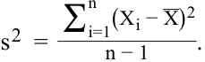
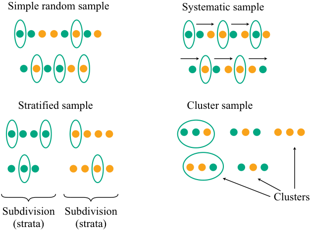
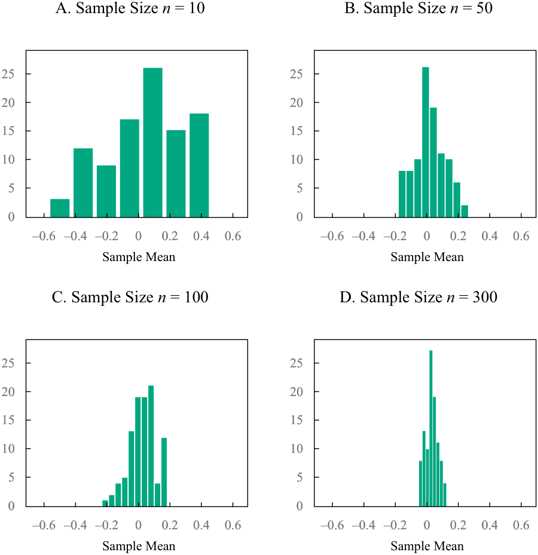
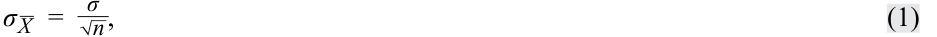
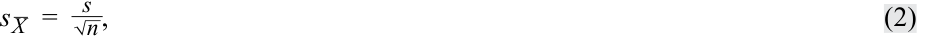
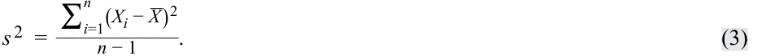

[Toàn Chương] LM07 — Learning Module 7 Estimation and Inference
Volume 1: Quantitative Methods
Learning Module 7 Estimation and Inference
Part 1/2: Introduction (PDF Pages 201–214)
Tập 1: Phương pháp Định lượng (Quantitative Methods)
Học phần 7: Ước lượng và Suy luận (Estimation and Inference)
Phần 1/2: Giới thiệu (Introduction) (Trang PDF 201–214)
L E A R N I N G M O D U L E
H Ọ C P H Ầ N
7
7
Estimation and Inference
Ước lượng và Suy luận (Estimation and Inference)
by Wu Jian, PhD.
tác giả: Wu Jian, PhD.
Jian Wu, PhD, is at State Street (USA).
Jian Wu, PhD, làm việc tại State Street (Hoa Kỳ).
LEARNING OUTCOMES
MỤC TIÊU HỌC TẬP (LEARNING OUTCOMES)
| Mastery | The candidate should be able to: |
|---|---|
| compare and contrast simple random, stratified random, cluster, convenience, and judgmental sampling and their implications for sampling error in an investment problem |
|
| explain the central limit theorem and its importance for the distribution and standard error of the sample mean |
|
| describe the use of resampling (bootstrap, jackknife) to estimate the sampling distribution of a statistic |
| Mức độ Thành thạo | Ứng viên cần có khả năng: |
|---|---|
| So sánh và đối chiếu lấy mẫu ngẫu nhiên đơn giản (simple random), lấy mẫu ngẫu nhiên phân tầng (stratified random), lấy mẫu theo cụm (cluster), lấy mẫu thuận tiện (convenience), và lấy mẫu phán đoán (judgmental sampling) cùng những hàm ý của chúng đối với sai số lấy mẫu (sampling error) trong một bài toán đầu tư. | |
| Giải thích định lý giới hạn trung tâm (central limit theorem) và tầm quan trọng của nó đối với phân phối và sai số chuẩn của trung bình mẫu (standard error of the sample mean). | |
| Mô tả việc sử dụng lấy mẫu lại (resampling: bootstrap, jackknife) để ước tính phân phối mẫu (sampling distribution) của một thống kê. |
INTRODUCTION
GIỚI THIỆU (INTRODUCTION)
In this Learning Module, we present the various methods for obtaining information on a population (all members of a specified group) through samples (part of the population). The information on a population that we seek usually concerns the value of a parameter , a quantity computed from or used to describe a population of data. In Lesson 1 we introduce sampling, which we use a sample to estimate a parameter; we make use of sample statistics. A statistic is a quantity computed from or used to describe a sample of data.
Trong Học phần này, chúng tôi trình bày các phương pháp khác nhau để thu thập thông tin về một tổng thể (population – tất cả các phần tử của một nhóm xác định) thông qua các mẫu (samples – một phần của tổng thể). Thông tin về tổng thể mà chúng ta tìm kiếm thường liên quan đến giá trị của một tham số (parameter), một đại lượng được tính toán từ hoặc được sử dụng để mô tả một tổng thể dữ liệu. Trong Bài 1, chúng tôi giới thiệu về lấy mẫu (sampling), phương pháp sử dụng một mẫu để ước tính một tham số; chúng ta sử dụng các thống kê mẫu (sample statistics). Một thống kê (statistic) là một đại lượng được tính toán từ hoặc được sử dụng để mô tả một mẫu dữ liệu.
Supposing that a sample is representative of the underlying population, how can the analyst assess the sampling error in estimating a population parameter? In Lesson 2, the Central Limit Theorem helps us understand the sampling distribution of the sample mean in many of the estimation problems we face. This provides guidance on how closely a sample mean can be expected to match its underlying population mean, allowing an analyst to use the sampling distribution to assess the accuracy of the sample and test hypotheses about the underlying parameter. Lesson 3 covers various resampling approaches.
Giả sử rằng một mẫu mang tính đại diện cho tổng thể cơ sở, làm thế nào nhà phân tích có thể đánh giá sai số lấy mẫu (sampling error) khi ước tính một tham số tổng thể? Trong Bài 2, Định lý Giới hạn Trung tâm (Central Limit Theorem) giúp chúng ta hiểu được phân phối mẫu của trung bình mẫu (sampling distribution of the sample mean) trong nhiều bài toán ước lượng mà chúng ta gặp phải. Điều này cung cấp hướng dẫn về mức độ sát sao mà một trung bình mẫu có thể được kỳ vọng sẽ khớp với trung bình tổng thể cơ sở của nó, cho phép nhà phân tích sử dụng phân phối mẫu để đánh giá độ chính xác của mẫu và kiểm định các giả thuyết về tham số cơ sở. Bài 3 trình bày các phương pháp tiếp cận lấy mẫu lại (resampling) khác nhau.
LEARNING MODULE OVERVIEW
TỔNG QUAN HỌC PHẦN (LEARNING MODULE OVERVIEW)
-
Of the two types of sampling methods, probability sampling includes simple random sampling and stratified random sampling, and non-probability sampling includes convenience sampling and judgmental sampling. Probability sampling involves equal chance of sample selection, while non-probability sampling has a significant risk of being non-representative.
-
Sampling error is the difference between the observed value of a statistic and the quantity it is intended to estimate as a result of using subsets of the population.
-
Non-probability sampling methods rely not on a fixed selection process but instead on a researcher’s sample selection capabilities. Its advantages include quick and low-cost data collection, and can apply expert judgment for efficient sample selection.
-
The Central Limit Theorem is defined as follows: Given a population described by any probability distribution with mean µ and finite variance σ2 , the sampling distribution of the sample mean_ X computed from random samples of size n from this population will be approximately normal with mean µ (the population mean) and variance σ2 /n (the population variance divided by n) when the sample size n is large.
-
The standard error of the sample mean is an important quantity in applying the central limit theorem in practice. It is typically estimated using the square root of the sample variance, calculated as follows:
-
Trong hai loại phương pháp lấy mẫu, lấy mẫu xác suất (probability sampling) bao gồm lấy mẫu ngẫu nhiên đơn giản (simple random sampling) và lấy mẫu ngẫu nhiên phân tầng (stratified random sampling), còn lấy mẫu phi xác suất (non-probability sampling) bao gồm lấy mẫu thuận tiện (convenience sampling) và lấy mẫu phán đoán (judgmental sampling). Lấy mẫu xác suất bao hàm cơ hội được chọn vào mẫu ngang nhau, trong khi lấy mẫu phi xác suất có rủi ro đáng kể là không mang tính đại diện (non-representative).
-
Sai số lấy mẫu (sampling error) là sự khác biệt giữa giá trị quan sát được của một thống kê và đại lượng mà nó nhằm mục đích ước tính do việc sử dụng các tập hợp con của tổng thể.
-
Các phương pháp lấy mẫu phi xác suất không dựa vào một quy trình lựa chọn cố định mà thay vào đó dựa vào khả năng lựa chọn mẫu của nhà nghiên cứu. Ưu điểm của nó bao gồm thu thập dữ liệu nhanh chóng với chi phí thấp, và có thể áp dụng phán đoán chuyên gia để lựa chọn mẫu hiệu quả.
-
Định lý Giới hạn Trung tâm (Central Limit Theorem) được định nghĩa như sau: Cho một tổng thể được mô tả bởi bất kỳ phân phối xác suất nào có giá trị trung bình $\mu$ và phương sai hữu hạn $\sigma^2$, phân phối mẫu của trung bình mẫu $\bar{X}$ được tính từ các mẫu ngẫu nhiên có kích thước $n$ từ tổng thể này sẽ có phân phối xấp xỉ chuẩn với giá trị trung bình $\mu$ (trung bình tổng thể) và phương sai $\sigma^2 / n$ (phương sai tổng thể chia cho $n$) khi kích thước mẫu $n$ lớn.
-
Sai số chuẩn của trung bình mẫu (standard error of the sample mean) là một đại lượng quan trọng khi áp dụng định lý giới hạn trung tâm trong thực tế. Nó thường được ước tính bằng căn bậc hai của phương sai mẫu, được tính như sau:

-
The central limit theorem shows that when sampling from any distribution, the sample mean distribution will have these two properties when the sample size is large: (1) the distribution of the sample mean X will be approximately normal, and (2) the mean of the distribution of X will be equal to the mean of the population from which samples are drawn.
-
Bootstrap, a popular resampling method which repeatedly draws samples of the same size as the original sample, uses computer simulation for statistical inference without using an analytical formula such as a z-statistic or t-statistic. It can be used as a simple but powerful method for any complicated estimators such as the standard error of a sample mean.
-
Bootstrap has potential advantages in accuracy. Given these advantages, it can be applied widely in finance, such as for historical simulations in asset allocation or in gauging an investment strategy’s performance against a benchmark.
-
Jackknife is another resampling technique with samples selected by taking the original observed data sample and leaving out one observation at a time from the set (and not replacing it). Jackknife is often used to reduce the bias of an estimator, and other applications include finding the standard error and confidence interval of an estimator.
-
Định lý giới hạn trung tâm chỉ ra rằng khi lấy mẫu từ bất kỳ phân phối nào, phân phối của trung bình mẫu sẽ có hai tính chất sau khi kích thước mẫu lớn: (1) phân phối của trung bình mẫu $\bar{X}$ sẽ xấp xỉ chuẩn, và (2) giá trị trung bình của phân phối $\bar{X}$ sẽ bằng giá trị trung bình của tổng thể mà từ đó các mẫu được rút ra.
-
Phương pháp tự thân (Bootstrap), một phương pháp lấy mẫu lại phổ biến thực hiện rút liên tiếp các mẫu có cùng kích thước với mẫu ban đầu, sử dụng mô phỏng máy tính để suy luận thống kê mà không cần sử dụng công thức giải tích như thống kê $z$ hay thống kê $t$. Nó có thể được sử dụng như một phương pháp đơn giản nhưng mạnh mẽ cho bất kỳ ước lượng phức tạp nào chẳng hạn như sai số chuẩn của trung bình mẫu.
-
Phương pháp bootstrap có những lợi thế tiềm năng về độ chính xác. Với những ưu điểm này, nó có thể được áp dụng rộng rãi trong tài chính, chẳng hạn như cho các mô phỏng lịch sử trong phân bổ tài sản (asset allocation) hoặc trong việc đo lường hiệu quả của một chiến lược đầu tư so với chỉ số chuẩn (benchmark).
-
Phương pháp Jackknife là một kỹ thuật lấy mẫu lại khác với các mẫu được chọn bằng cách lấy mẫu dữ liệu quan sát ban đầu và loại bỏ lần lượt từng quan sát một ra khỏi tập hợp (và không hoàn lại). Phương pháp Jackknife thường được sử dụng để giảm độ chệch (bias) của một ước lượng, và các ứng dụng khác bao gồm tìm sai số chuẩn và khoảng tin cậy (confidence interval) của một ước lượng.
SAMPLING METHODS
CÁC PHƯƠNG PHÁP LẤY MẪU (SAMPLING METHODS)
2
2
compare and contrast simple random, stratified random, cluster, convenience, and judgmental sampling and their implications for sampling error in an investment problem
So sánh và đối chiếu lấy mẫu ngẫu nhiên đơn giản, lấy mẫu ngẫu nhiên phân tầng, lấy mẫu theo cụm, lấy mẫu thuận tiện, và lấy mẫu phán đoán cùng những hàm ý của chúng đối với sai số lấy mẫu trong một bài toán đầu tư
We take samples for one of two reasons. In some cases, we cannot possibly examine every member of the population. In other cases, examining every member of the population would not be economically efficient. Thus, savings of time and money are two primary factors that cause an analyst to use sampling to answer a question about a population.
Chúng ta lấy mẫu vì một trong hai lý do. Trong một số trường hợp, chúng ta không thể kiểm tra mọi phần tử của tổng thể. Trong các trường hợp khác, việc kiểm tra mọi phần tử của tổng thể sẽ không hiệu quả về mặt kinh tế. Do đó, tiết kiệm thời gian và tiền bạc là hai yếu tố chính khiến nhà phân tích sử dụng phương pháp lấy mẫu để trả lời một câu hỏi về tổng thể.
There are two types of sampling methods: probability sampling and non-probability sampling . Probability sampling gives every member of the population an equal chance of being selected. Hence it can create a sample that is representative of the population. In contrast, non-probability sampling depends on factors other than probability considerations, such as a sampler’s judgment or the convenience to access data. Consequently, there is a significant risk that non-probability sampling might generate a non-representative sample. In general, all else being equal, probability sampling can yield more accuracy and reliability compared with non-probability sampling.
Có hai loại phương pháp lấy mẫu: lấy mẫu xác suất (probability sampling) và lấy mẫu phi xác suất (non-probability sampling). Lấy mẫu xác suất trao cho mọi phần tử của tổng thể cơ hội ngang nhau để được chọn. Do đó, nó có thể tạo ra một mẫu mang tính đại diện cho tổng thể. Ngược lại, lấy mẫu phi xác suất phụ thuộc vào các yếu tố ngoài những cân nhắc về xác suất, chẳng hạn như phán đoán của người lấy mẫu hoặc sự thuận tiện trong việc tiếp cận dữ liệu. Hệ quả là có một rủi ro đáng kể rằng lấy mẫu phi xác suất có thể tạo ra một mẫu không mang tính đại diện. Nhìn chung, với các yếu tố khác không đổi, lấy mẫu xác suất có thể mang lại độ chính xác và độ tin cậy cao hơn so với lấy mẫu phi xác suất.
We first focus on probability sampling, particularly the widely used simple random sampling and stratified random sampling . We then turn our attention to non-probability sampling.
Trước tiên chúng ta tập trung vào lấy mẫu xác suất, đặc biệt là hai phương pháp được sử dụng rộng rãi: lấy mẫu ngẫu nhiên đơn giản (simple random sampling) và lấy mẫu ngẫu nhiên phân tầng (stratified random sampling). Sau đó, chúng ta chuyển sự chú ý sang lấy mẫu phi xác suất.
Simple Random Sampling
Lấy mẫu Ngẫu nhiên Đơn giản (Simple Random Sampling)
Suppose a wireless equipment analyst wants to know how much major customers will spend on average for equipment during the coming year. One strategy is to survey the population of wireless equipment customers and inquire what their purchasing plans are. Surveying all companies, however, would be very costly in terms of time and money.
Giả sử một nhà phân tích thiết bị không dây muốn biết các khách hàng lớn sẽ chi tiêu trung bình bao nhiêu cho thiết bị trong năm tới. Một chiến lược là khảo sát toàn bộ tổng thể khách hàng thiết bị không dây và hỏi kế hoạch mua hàng của họ là gì. Tuy nhiên, việc khảo sát tất cả các công ty sẽ rất tốn kém về thời gian và tiền bạc.
Alternatively, the analyst can collect a representative sample of companies and survey them about upcoming wireless equipment expenditures. In this case, the analyst will compute the sample mean expenditure, X_ , a statistic. This strategy has a substantial advantage over polling the whole population because it can be accomplished more quickly and at lower cost.
Thay vào đó, nhà phân tích có thể thu thập một mẫu đại diện các công ty và khảo sát họ về các khoản chi tiêu thiết bị không dây sắp tới. Trong trường hợp này, nhà phân tích sẽ tính toán mức chi tiêu trung bình mẫu, $\bar{X}$, một đại lượng thống kê (statistic). Chiến lược này có lợi thế đáng kể so với việc khảo sát toàn bộ tổng thể vì nó có thể được thực hiện nhanh hơn và với chi phí thấp hơn.
Sampling, however, introduces error. The error arises because not all of the companies in the population are surveyed. The analyst who decides to sample is trading time and money for sampling error.
Tuy nhiên, việc lấy mẫu làm phát sinh sai số. Sai số phát sinh bởi vì không phải tất cả các công ty trong tổng thể đều được khảo sát. Nhà phân tích quyết định lấy mẫu đang đánh đổi thời gian và tiền bạc lấy sai số lấy mẫu (sampling error).
When an analyst chooses to sample, they must formulate a sampling plan. A sampling plan is the set of rules used to select a sample. The basic type of sample from which we can draw statistically sound conclusions about a population is the simple random sample.
Khi một nhà phân tích chọn lấy mẫu, họ phải lập một kế hoạch lấy mẫu. Kế hoạch lấy mẫu (sampling plan) là tập hợp các quy tắc được sử dụng để chọn một mẫu. Loại mẫu cơ bản mà từ đó chúng ta có thể rút ra các kết luận vững chắc về mặt thống kê đối với một tổng thể là mẫu ngẫu nhiên đơn giản.
A simple random sample is a subset of a larger population created in such a way that each element of the population has an equal probability of being selected to the subset.
Mẫu ngẫu nhiên đơn giản (simple random sample) là một tập hợp con của một tổng thể lớn hơn được tạo ra theo cách sao cho mỗi phần tử của tổng thể có xác suất được chọn vào tập hợp con là như nhau.
The procedure of drawing a sample to satisfy the definition of a simple random sample is called simple random sampling . Simple random sampling is particularly useful when data in the population is homogeneous—that is, the characteristics of the data or observations (e.g., size or region) are broadly similar. If this condition is not satisfied, other types of sampling may be more appropriate.
Thủ tục rút một mẫu thỏa mãn định nghĩa về mẫu ngẫu nhiên đơn giản được gọi là lấy mẫu ngẫu nhiên đơn giản (simple random sampling). Lấy mẫu ngẫu nhiên đơn giản đặc biệt hữu ích khi dữ liệu trong tổng thể có tính đồng nhất (homogeneous)—tức là đặc điểm của dữ liệu hoặc các quan sát (ví dụ: quy mô hoặc khu vực) nhìn chung là tương đồng. Nếu điều kiện này không được thỏa mãn, các loại lấy mẫu khác có thể phù hợp hơn.
Systematic sampling can be used when we cannot code (or even identify) all the members of a population. With systematic sampling, we select every k th member until we have a sample of the desired size. The sample that results from this procedure should be approximately random.
Lấy mẫu hệ thống (Systematic sampling) có thể được sử dụng khi chúng ta không thể mã hóa (hoặc thậm chí xác định) tất cả các phần tử của một tổng thể. Với lấy mẫu hệ thống, chúng ta chọn mỗi phần tử thứ $k$ cho đến khi có được một mẫu có kích thước mong muốn. Mẫu thu được từ thủ tục này sẽ xấp xỉ ngẫu nhiên.
Suppose the wireless equipment analyst polls a random sample of wireless equipment customers to determine the average equipment expenditure. The derived sample mean will provide the analyst with an estimate of the population mean expenditure. The mean obtained from the sample this way will differ from the population mean that we are trying to estimate. It is subject to error. An important part of this error is known as sampling error, which comes from sampling variation and occurs because we have data on only a subset of the population.
Giả sử nhà phân tích thiết bị không dây khảo sát một mẫu ngẫu nhiên các khách hàng thiết bị không dây để xác định mức chi tiêu thiết bị trung bình. Trung bình mẫu thu được sẽ cung cấp cho nhà phân tích một ước lượng về mức chi tiêu trung bình của tổng thể. Giá trị trung bình thu được từ mẫu theo cách này sẽ khác với trung bình tổng thể mà chúng ta đang cố gắng ước tính. Nó chịu ảnh hưởng của sai số. Một phần quan trọng của sai số này được gọi là sai số lấy mẫu (sampling error), xuất phát từ sự biến thiên lấy mẫu và xảy ra vì chúng ta chỉ có dữ liệu trên một tập hợp con của tổng thể.
Sampling error is the difference between the observed value of a statistic and the quantity it is intended to estimate as a result of using subsets of the population.
Sai số lấy mẫu (Sampling error) là sự khác biệt giữa giá trị quan sát được của một thống kê và đại lượng mà nó nhằm mục đích ước tính do việc sử dụng các tập hợp con của tổng thể.
A random sample reflects the properties of the population in an unbiased way, and sample statistics, such as the sample mean, computed on the basis of a random sample are valid estimates of the underlying population parameters. Thus a sample statistic is a random variable. In other words, not only do the original data from the population have a distribution but so does the sample statistic. This distribution is the statistic’s sampling distribution.
Một mẫu ngẫu nhiên phản ánh các đặc tính của tổng thể một cách không chệch (unbiased), và các thống kê mẫu, chẳng hạn như trung bình mẫu, được tính toán trên cơ sở một mẫu ngẫu nhiên là các ước lượng hợp lệ của các tham số tổng thể cơ sở. Do đó, một thống kê mẫu là một biến ngẫu nhiên. Nói cách khác, không chỉ dữ liệu gốc từ tổng thể có một phân phối mà thống kê mẫu cũng có một phân phối. Phân phối này chính là phân phối mẫu (sampling distribution) của thống kê đó.
Sampling distribution of a statistic is the distribution of all the distinct possible values that the statistic can assume when computed from samples of the same size randomly drawn from the same population.
Phân phối mẫu (Sampling distribution) của một thống kê là phân phối của tất cả các giá trị khả dĩ riêng biệt mà thống kê đó có thể nhận khi được tính toán từ các mẫu có cùng kích thước được rút ngẫu nhiên từ cùng một tổng thể.
In the case of the sample mean, for example, we refer to the “sampling distribution of the sample mean” or the distribution of the sample mean. We will have more to say about sampling distributions later in this text. Next, we look at another sampling method that is useful in investment analysis.
Ví dụ, trong trường hợp trung bình mẫu, chúng ta gọi là “phân phối mẫu của trung bình mẫu” hoặc phân phối của trung bình mẫu. Chúng ta sẽ nói nhiều hơn về phân phối mẫu ở phần sau của tài liệu này. Tiếp theo, chúng ta xem xét một phương pháp lấy mẫu khác hữu ích trong phân tích đầu tư.
Stratified Random Sampling
Lấy mẫu Ngẫu nhiên Phân tầng (Stratified Random Sampling)
The simple random sampling method just discussed may not be the best approach in all situations. One frequently used alternative is stratified random sampling.
Phương pháp lấy mẫu ngẫu nhiên đơn giản vừa thảo luận có thể không phải là cách tiếp cận tốt nhất trong mọi tình huống. Một phương pháp thay thế thường được sử dụng là lấy mẫu ngẫu nhiên phân tầng.
In stratified random sampling , the population is divided into subpopulations (strata) based on one or more classification criteria. Simple random samples are then drawn from each stratum in sizes proportional to the relative size of each stratum in the population. These samples are then pooled to form a stratified random sample.
Trong lấy mẫu ngẫu nhiên phân tầng (stratified random sampling), tổng thể được chia thành các tổng thể con (các tầng – strata) dựa trên một hoặc nhiều tiêu chí phân loại. Các mẫu ngẫu nhiên đơn giản sau đó được rút ra từ mỗi tầng với kích thước tỷ lệ thuận với quy mô tương đối của mỗi tầng trong tổng thể. Các mẫu này sau đó được gộp lại để tạo thành một mẫu ngẫu nhiên phân tầng.
In contrast to simple random sampling, stratified random sampling guarantees that population subdivisions of interest are represented in the sample. Another advantage is that estimates of parameters produced from stratified sampling have greater precision—that is, smaller variance or dispersion—than estimates obtained from simple random sampling.
Trái ngược với lấy mẫu ngẫu nhiên đơn giản, lấy mẫu ngẫu nhiên phân tầng đảm bảo rằng các phân nhóm tổng thể được quan tâm đều có đại diện trong mẫu. Một ưu điểm khác là các ước lượng tham số được tạo ra từ lấy mẫu phân tầng có độ chính xác cao hơn—tức là phương sai hoặc độ phân tán nhỏ hơn—so với các ước lượng thu được từ lấy mẫu ngẫu nhiên đơn giản.
Bond indexing is one area in which stratified sampling is frequently applied. Indexing is an investment strategy in which an investor constructs a portfolio to mirror the performance of a specified index. In pure bond indexing, also called the full-replication approach, the investor attempts to fully replicate an index by owning all the bonds in the index in proportion to their market value weights. Many bond indexes consist of thousands of issues, however, so pure bond indexing is difficult to implement. In addition, transaction costs would be high because many bonds do not have liquid markets.
Đầu tư bám sát chỉ số trái phiếu (bond indexing) là một lĩnh vực mà lấy mẫu phân tầng thường xuyên được áp dụng. Đầu tư theo chỉ số (Indexing) là một chiến lược đầu tư trong đó nhà đầu tư xây dựng một danh mục đầu tư để mô phỏng hiệu quả của một chỉ số xác định. Trong đầu tư chỉ số trái phiếu thuần túy (pure bond indexing), còn được gọi là phương pháp mô phỏng toàn phần (full-replication approach), nhà đầu tư cố gắng mô phỏng hoàn toàn một chỉ số bằng cách sở hữu tất cả các trái phiếu trong chỉ số theo tỷ lệ trọng số giá trị thị trường của chúng. Tuy nhiên, nhiều chỉ số trái phiếu bao gồm hàng ngàn đợt phát hành, vì vậy đầu tư chỉ số trái phiếu thuần túy rất khó thực hiện. Ngoài ra, chi phí giao dịch sẽ rất cao vì nhiều trái phiếu không có thị trường thanh khoản.
Although a simple random sample could be a solution to the cost problem, the sample would probably not match the index’s major risk factors, such as interest rate sensitivity. Because the major risk factors of fixed-income portfolios are well known and quantifiable, stratified sampling offers a more effective approach. In this approach, we divide the population of index bonds into groups of similar duration (interest rate sensitivity), cash flow distribution, sector, credit quality, and call exposure. We refer
Mặc dù một mẫu ngẫu nhiên đơn giản có thể là giải pháp cho bài toán chi phí, nhưng mẫu đó có khả năng sẽ không khớp với các yếu tố rủi ro chính của chỉ số, chẳng hạn như độ nhạy lãi suất (interest rate sensitivity). Bởi vì các yếu tố rủi ro chính của danh mục thu nhập cố định đã được biết rõ và có thể định lượng được, lấy mẫu phân tầng mang lại một cách tiếp cận hiệu quả hơn. Trong cách tiếp cận này, chúng ta chia tổng thể các trái phiếu trong chỉ số thành các nhóm có thời lượng (duration – độ nhạy lãi suất), phân phối dòng tiền, ngành, chất lượng tín dụng và mức độ rủi ro mua lại (call exposure) tương tự nhau. Chúng ta gọi
to each group as a stratum or cell (a term frequently used in this context). Then, we choose a sample from each stratum proportional to the relative market weighting of the stratum in the index to be replicated.
mỗi nhóm là một tầng (stratum) hoặc ô (cell – một thuật ngữ thường được sử dụng trong bối cảnh này). Sau đó, chúng ta chọn một mẫu từ mỗi tầng tỷ lệ thuận với trọng số thị trường tương đối của tầng đó trong chỉ số cần mô phỏng.
EXAMPLE 1
VÍ DỤ 1 (EXAMPLE 1)
Bond Indexes and Stratified Sampling
Chỉ số Trái phiếu và Lấy mẫu Phân tầng (Bond Indexes and Stratified Sampling)
Suppose you are the manager of a portfolio of bonds indexed to the Bloomberg Barclays US Government/Credit Index, meaning that the portfolio returns should be similar to those of the index. You are exploring several approaches to indexing, including a stratified sampling approach. You first distinguish among agency bonds, US Treasury bonds, and investment-grade corporate bonds. For each of these three groups, you define 10 maturity intervals—1 to 2 years, 2 to 3 years, 3 to 4 years, 4 to 6 years, 6 to 8 years, 8 to 10 years, 10 to 12 years, 12 to 15 years, 15 to 20 years, and 20 to 30 years—and also separate the bonds with coupons (annual interest rates) of 6 percent or less from the bonds with coupons of more than 6 percent.
Giả sử bạn là người quản lý một danh mục đầu tư trái phiếu bám sát theo Chỉ số Chính phủ/Tín dụng Hoa Kỳ của Bloomberg Barclays (Bloomberg Barclays US Government/Credit Index), nghĩa là tỷ suất sinh lợi của danh mục đầu tư phải tương tự như tỷ suất sinh lợi của chỉ số. Bạn đang khám phá một số cách tiếp cận để đầu tư theo chỉ số, bao gồm cả cách tiếp cận lấy mẫu phân tầng. Trước tiên, bạn phân biệt giữa trái phiếu cơ quan chính phủ (agency bonds), trái phiếu Kho bạc Hoa Kỳ (US Treasury bonds) và trái phiếu doanh nghiệp hạng đầu tư (investment-grade corporate bonds). Đối với mỗi nhóm trong ba nhóm này, bạn xác định 10 khoảng kỳ hạn—1 đến 2 năm, 2 đến 3 năm, 3 đến 4 năm, 4 đến 6 năm, 6 đến 8 năm, 8 đến 10 năm, 10 đến 12 năm, 12 đến 15 năm, 15 đến 20 năm, và 20 đến 30 năm—và cũng tách biệt các trái phiếu có lãi suất coupon (lãi suất hàng năm) từ 6% trở xuống với các trái phiếu có lãi suất coupon trên 6%.
- How many cells or strata does this sampling plan entail?
- Solution:
- Kế hoạch lấy mẫu này bao gồm bao nhiêu ô (cells) hoặc tầng (strata)?
We have 3 issuer classifications, 10 maturity classifications, and 2 coupon classifications. So, in total, this plan entails 3(10)(2) = 60 different strata or cells.
Lời giải (Solution):
- If you use this sampling plan, what is the minimum number of issues the indexed portfolio can have?
Chúng ta có 3 phân loại tổ chức phát hành, 10 phân loại kỳ hạn và 2 phân loại lãi suất coupon. Vì vậy, tổng cộng, kế hoạch này bao gồm $3(10)(2) = 60$ tầng hoặc ô khác nhau.
- Nếu bạn sử dụng kế hoạch lấy mẫu này, số lượng đợt phát hành tối thiểu mà danh mục đầu tư theo chỉ số có thể có là bao nhiêu?
Solution:
Lời giải (Solution):
One cannot have less than 1 issue for each cell, so the portfolio must include at least 60 issues.
Người ta không thể có ít hơn 1 đợt phát hành cho mỗi ô, vì vậy danh mục đầu tư phải bao gồm ít nhất 60 đợt phát hành.
- Suppose that in selecting among the securities that qualify for selection within each cell, you apply a criterion concerning the liquidity of the security’s market. Is the sample obtained random? Explain your answer.
- Giả sử rằng khi lựa chọn trong số các chứng khoán đủ điều kiện để chọn trong mỗi ô, bạn áp dụng một tiêu chí liên quan đến tính thanh khoản của thị trường chứng khoán đó. Mẫu thu được có phải là ngẫu nhiên không? Giải thích câu trả lời của bạn.
Solution:
Lời giải (Solution):
Applying any additional criteria to the selection of securities for the cells, not every security that might be included has an equal probability of being selected. There is no proportionality in the selection, and as a result, the sampling is not random. In practice, indexing using stratified sampling usually does not strictly involve random sampling because the selection of bond issues within cells is subject to various additional criteria. Because the purpose of sampling in this application is not to make an inference about a population parameter but rather to index a portfolio, lack of randomness is not in itself a problem in this application of stratified sampling.
Khi áp dụng bất kỳ tiêu chí bổ sung nào vào việc lựa chọn chứng khoán cho các ô, không phải mọi chứng khoán có thể được đưa vào đều có xác suất được chọn ngang nhau. Không có tính tỷ lệ đồng đều trong việc lựa chọn, và kết quả là việc lấy mẫu không phải là ngẫu nhiên. Trên thực tế, việc đầu tư theo chỉ số sử dụng lấy mẫu phân tầng thường không hoàn toàn bao hàm việc lấy mẫu ngẫu nhiên bởi vì việc lựa chọn các đợt phát hành trái phiếu trong các ô phải tuân theo nhiều tiêu chí bổ sung khác nhau. Bởi vì mục đích của việc lấy mẫu trong ứng dụng này không phải là để đưa ra suy luận về một tham số tổng thể mà là để mô phỏng chỉ số cho một danh mục đầu tư, nên việc thiếu tính ngẫu nhiên tự bản thân nó không phải là một vấn đề trong ứng dụng lấy mẫu phân tầng này.
Cluster Sampling
Lấy mẫu theo Cụm (Cluster Sampling)
Another sampling method, cluster sampling , also requires the division or classification of the population into subpopulation groups, called clusters. In this method, the population is divided into clusters, each of which is essentially a mini-representation of the entire populations. Then certain clusters are chosen as a whole using simple
Một phương pháp lấy mẫu khác, lấy mẫu theo cụm (cluster sampling), cũng đòi hỏi việc phân chia hoặc phân loại tổng thể thành các nhóm tổng thể con, được gọi là các cụm (clusters). Trong phương pháp này, tổng thể được chia thành các cụm, mỗi cụm về cơ bản là một bản đại diện thu nhỏ (mini-representation) của toàn bộ tổng thể. Sau đó, một số cụm nhất định được chọn nguyên cụm bằng cách sử dụng lấy mẫu
random sampling. If all the members in each sampled cluster are sampled, this sample plan is referred to as one-stage cluster sampling. If a subsample is randomly selected from each selected cluster, then the plan is referred as two-stage cluster sampling. Exhibit 1 (bottom-right panel) shows how cluster sampling works and how it compares with the other probability sampling methods.
ngẫu nhiên đơn giản. Nếu tất cả các phần tử trong mỗi cụm được chọn đều được lấy mẫu, kế hoạch lấy mẫu này được gọi là lấy mẫu theo cụm một giai đoạn (one-stage cluster sampling). Nếu một mẫu con được chọn ngẫu nhiên từ mỗi cụm đã chọn, thì kế hoạch đó được gọi là lấy mẫu theo cụm hai giai đoạn (two-stage cluster sampling). Minh họa 1 (bảng góc dưới bên phải) cho thấy cách hoạt động của lấy mẫu theo cụm và so sánh nó với các phương pháp lấy mẫu xác suất khác.
Exhibit 1: Probability Sampling
Minh họa 1: Lấy mẫu Xác suất (Exhibit 1: Probability Sampling)

Chú thích hình ảnh: Bốn phương pháp lấy mẫu xác suất: - Mẫu ngẫu nhiên đơn giản (Simple random sample): Chọn ngẫu nhiên các cá thể từ toàn bộ tổng thể. - Mẫu hệ thống (Systematic sample): Chọn định kỳ mỗi cá thể thứ $k$. - Mẫu phân tầng (Stratified sample): Chia thành các phân nhóm/tầng (Subdivision/strata) và lấy mẫu ngẫu nhiên trong tất cả các tầng. - Mẫu theo cụm (Cluster sample): Chia thành các cụm (Clusters) và chọn ngẫu nhiên một số cụm.
A major difference between cluster and stratified random samples is that in cluster sampling, a whole cluster is regarded as a sampling unit and only sampled clusters are included. In stratified random sampling, however, all the strata are included and only specific elements within each stratum are then selected as sampling units.
Một sự khác biệt lớn giữa mẫu ngẫu nhiên theo cụm và mẫu ngẫu nhiên phân tầng là trong lấy mẫu theo cụm, toàn bộ một cụm được coi là một đơn vị lấy mẫu và chỉ những cụm được lấy mẫu mới được đưa vào. Tuy nhiên, trong lấy mẫu ngẫu nhiên phân tầng, tất cả các tầng đều được đưa vào và chỉ những phần tử cụ thể bên trong mỗi tầng mới được chọn làm đơn vị lấy mẫu.
Cluster sampling is commonly used for broad market surveys, and the most popular version identifies clusters based on geographic parameters. For example, a research institute is looking to survey if individual investors in the United States are bullish, bearish, or neutral on the stock market. It would be impossible to carry out the research by surveying all the individual investors in the country. The two-stage cluster sampling is a good solution in this case. In the first stage, a researcher can group the population by states and all the individual investors of each state represent a cluster. A handful of the clusters are then randomly selected. At the second stage, a simple random sample of individual investors is selected from each sampled cluster to conduct the survey.
Lấy mẫu theo cụm thường được sử dụng cho các cuộc khảo sát thị trường diện rộng, và phiên bản phổ biến nhất xác định các cụm dựa trên các tham số địa lý. Ví dụ, một viện nghiên cứu đang tìm cách khảo sát xem các nhà đầu tư cá nhân tại Hoa Kỳ đang lạc quan (bullish), bi quan (bearish) hay trung lập (neutral) về thị trường chứng khoán. Sẽ là bất khả thi nếu thực hiện nghiên cứu bằng cách khảo sát tất cả các nhà đầu tư cá nhân trong cả nước. Lấy mẫu theo cụm hai giai đoạn là một giải pháp tốt trong trường hợp này. Ở giai đoạn đầu tiên, nhà nghiên cứu có thể nhóm tổng thể theo các tiểu bang và tất cả các nhà đầu tư cá nhân của mỗi tiểu bang đại diện cho một cụm. Một số ít các cụm sau đó được chọn ngẫu nhiên. Ở giai đoạn thứ hai, một mẫu ngẫu nhiên đơn giản gồm các nhà đầu tư cá nhân được chọn từ mỗi cụm đã lấy mẫu để tiến hành khảo sát.
Compared with other probability sampling methods, given equal sample size, cluster sampling usually yields lower accuracy because a sample from a cluster might be less representative of the entire population. Its major advantage, however, is offering the most time-efficient and cost-efficient probability sampling plan for analyzing a vast population.
So với các phương pháp lấy mẫu xác suất khác, với cùng kích thước mẫu, lấy mẫu theo cụm thường mang lại độ chính xác thấp hơn vì một mẫu từ một cụm có thể ít mang tính đại diện cho toàn bộ tổng thể hơn. Tuy nhiên, ưu điểm lớn của nó là mang lại kế hoạch lấy mẫu xác suất tiết kiệm thời gian và chi phí nhất để phân tích một tổng thể rộng lớn.
Non-Probability Sampling
Lấy mẫu Phi xác suất (Non-Probability Sampling)
Non-probability sampling methods rely not on a fixed selection process but instead on a researcher’s sample selection capabilities. We introduce two major types of non-probability sampling methods here.
Các phương pháp lấy mẫu phi xác suất không dựa vào một quy trình lựa chọn cố định mà thay vào đó dựa vào khả năng lựa chọn mẫu của nhà nghiên cứu. Chúng tôi giới thiệu hai loại phương pháp lấy mẫu phi xác suất chính tại đây.
- Convenience Sampling: In this method, an element is selected from the population based on whether or not it is accessible to a researcher or on how easy it is for a researcher to access the element. The samples are not
- Lấy mẫu Thuận tiện (Convenience Sampling): Trong phương pháp này, một phần tử được chọn từ tổng thể dựa trên việc liệu nhà nghiên cứu có thể tiếp cận được nó hay không hoặc mức độ dễ dàng để nhà nghiên cứu tiếp cận phần tử đó. Các mẫu không
necessarily representative of the entire population, and hence the level of sampling accuracy could be limited. The advantage of convenience sampling is that data can be collected quickly at a low cost. In situations such as the preliminary stage of research or in circumstances subject to cost constraints, convenience sampling is often used as a time-efficient and cost-effective sampling plan for a small-scale pilot study before testing a large-scale and more representative sample.
nhất thiết mang tính đại diện cho toàn bộ tổng thể, và do đó mức độ chính xác của việc lấy mẫu có thể bị hạn chế. Ưu điểm của lấy mẫu thuận tiện (convenience sampling) là dữ liệu có thể được thu thập nhanh chóng với chi phí thấp. Trong các tình huống như giai đoạn sơ bộ của nghiên cứu hoặc trong các hoàn cảnh bị ràng buộc về chi phí, lấy mẫu thuận tiện thường được sử dụng như một kế hoạch lấy mẫu tiết kiệm thời gian và hiệu quả về chi phí cho một nghiên cứu thử nghiệm quy mô nhỏ (pilot study) trước khi kiểm nghiệm một mẫu quy mô lớn và mang tính đại diện hơn.
- Judgmental Sampling: This sampling process involves selectively handpicking elements from the population based on a researcher’s knowledge and professional judgment. Sample selection under judgmental sampling can be affected by the bias of the researcher and might lead to skewed results that do not represent the whole population. In circumstances where there is a time constraint, however, or when the specialty of researchers is critical to select a more representative sample than by using other probability or non-probability sampling methods, judgmental sampling allows researchers to go directly to the target population of interest. For example, when auditing financial statements, seasoned auditors can apply their sound judgment to select accounts or transactions that can provide sufficient audit coverage. Example 2 illustrates an application of these sampling methods.
- Lấy mẫu Phán đoán (Judgmental Sampling): Quy trình lấy mẫu này bao gồm việc tuyển chọn có chọn lọc các phần tử từ tổng thể dựa trên kiến thức và phán đoán chuyên môn của nhà nghiên cứu. Việc lựa chọn mẫu theo lấy mẫu phán đoán (judgmental sampling) có thể bị ảnh hưởng bởi sự thiên lệch (bias) của nhà nghiên cứu và có thể dẫn đến các kết quả bị lệch không đại diện cho toàn bộ tổng thể. Tuy nhiên, trong những hoàn cảnh có sự ràng buộc về thời gian, hoặc khi chuyên môn của các nhà nghiên cứu là yếu tố quyết định để chọn được một mẫu mang tính đại diện tốt hơn so với việc sử dụng các phương pháp lấy mẫu xác suất hoặc phi xác suất khác, lấy mẫu phán đoán cho phép các nhà nghiên cứu đi thẳng vào tổng thể mục tiêu cần quan tâm. Ví dụ, khi kiểm toán báo cáo tài chính, các kiểm toán viên dày dạn kinh nghiệm có thể áp dụng phán đoán sắc bén của mình để chọn các tài khoản hoặc giao dịch có thể cung cấp phạm vi bao phủ kiểm toán đầy đủ. Ví dụ 2 minh họa một ứng dụng của các phương pháp lấy mẫu này.
EXAMPLE 2
VÍ DỤ 2 (EXAMPLE 2)
Demonstrating the Power of Sampling
Minh họa Sức mạnh của Lấy mẫu (Demonstrating the Power of Sampling)
To demonstrate the power of sampling, we conduct two sampling experiments on a large dataset. The full dataset is the “population,” representing daily returns of the fictitious Euro-Asia-Africa (EAA) Equity Index. This dataset spans a fiveyear period and consists of 1,258 observations of daily returns with a minimum value of −4.1 percent and a maximum value of 5.0 percent.
Để minh họa sức mạnh của việc lấy mẫu, chúng ta tiến hành hai thí nghiệm lấy mẫu trên một tập dữ liệu lớn. Toàn bộ tập dữ liệu là “tổng thể”, đại diện cho tỷ suất sinh lợi hàng ngày của Chỉ số Cổ phiếu Âu-Á-Phi (Euro-Asia-Africa – EAA Equity Index) giả định. Tập dữ liệu này kéo dài trong giai đoạn 5 năm và bao gồm 1,258 quan sát về tỷ suất sinh lợi hàng ngày với giá trị tối thiểu là $-4.1\%$ và giá trị tối đa là $5.0\%$.
First, we calculate the mean daily return of the EAA Equity Index (using the population).
Trước tiên, chúng ta tính tỷ suất sinh lợi trung bình hàng ngày của Chỉ số Cổ phiếu EAA (sử dụng tổng thể).
By taking the average of all the data points, the mean of the entire daily return series is computed as 0.035 percent.
Bằng cách lấy trung bình của tất cả các điểm dữ liệu, giá trị trung bình của toàn bộ chuỗi tỷ suất sinh lợi hàng ngày được tính là $0.035\%$.
First Experiment: Random Sampling
Thí nghiệm Thứ nhất: Lấy mẫu Ngẫu nhiên (First Experiment: Random Sampling)
The sample size m is set to 5, 10, 20, 50, 100, 200, 500, and 1,000. At each sample size, we run random sampling multiple times ( N = 100) to collect 100 samples to compute mean absolute error. The aim is to compute and plot the mean error versus the sample size.
Kích thước mẫu $m$ được đặt thành 5, 10, 20, 50, 100, 200, 500 và 1,000. Tại mỗi kích thước mẫu, chúng ta chạy lấy mẫu ngẫu nhiên nhiều lần ($N = 100$) để thu thập 100 mẫu nhằm tính sai số tuyệt đối trung bình (mean absolute error). Mục đích là để tính toán và vẽ đồ thị sai số trung bình theo kích thước mẫu.
For a given sample size m , we use a random sampling procedure to compute mean absolute error in order to measure sampling error.
Đối với một kích thước mẫu $m$ nhất định, chúng ta sử dụng thủ tục lấy mẫu ngẫu nhiên để tính sai số tuyệt đối trung bình nhằm đo lường sai số lấy mẫu.
By applying this procedure, we compute mean absolute errors for eight different sample sizes: m = 5, 10, 20, 50, 100, 200, 500, and 1000.
Bằng cách áp dụng thủ tục này, chúng ta tính toán sai số tuyệt đối trung bình cho tám kích thước mẫu khác nhau: $m = 5, 10, 20, 50, 100, 200, 500$ và $1,000$.
Second Experiment: Stratified Random Sampling
Thí nghiệm Thứ hai: Lấy mẫu Ngẫu nhiên Phân tầng (Second Experiment: Stratified Random Sampling)
We now conduct stratified random sampling by dividing daily returns into groups by year. The sample size m is again set to 5, 10, 20, 50, 100, 200, 500, and 1,000. At each sample size, we run random sampling multiple times ( N = 100) to collect 100 samples to compute mean absolute error.
Bây giờ chúng ta tiến hành lấy mẫu ngẫu nhiên phân tầng bằng cách chia tỷ suất sinh lợi hàng ngày thành các nhóm theo năm. Kích thước mẫu $m$ một lần nữa được đặt thành 5, 10, 20, 50, 100, 200, 500 và 1,000. Tại mỗi kích thước mẫu, chúng ta chạy lấy mẫu ngẫu nhiên nhiều lần ($N = 100$) để thu thập 100 mẫu nhằm tính sai số tuyệt đối trung bình.
We follow the same steps as before, except for the first step. Rather than running a simple random sampling, we conduct stratified random sampling—that is, randomly selecting subsamples of equal number from daily return groups by year to generate a full sample. For example, for a sample of 50, 10 data points are randomly selected from daily returns of each year from 2014 to 2018, respectively. Exhibit 2 summarizes the results.
Chúng ta làm theo các bước tương tự như trước, ngoại trừ bước đầu tiên. Thay vì chạy lấy mẫu ngẫu nhiên đơn giản, chúng ta tiến hành lấy mẫu ngẫu nhiên phân tầng—tức là chọn ngẫu nhiên các mẫu con có số lượng bằng nhau từ các nhóm tỷ suất sinh lợi hàng ngày theo năm để tạo ra một mẫu đầy đủ. Ví dụ, đối với một mẫu gồm 50 quan sát, 10 điểm dữ liệu được chọn ngẫu nhiên từ tỷ suất sinh lợi hàng ngày của mỗi năm tương ứng từ 2014 đến 2018. Minh họa 2 tóm tắt các kết quả.
Exhibit 2: Mean Absolute Errors under Different Sampling Procedures
Minh họa 2: Sai số Tuyệt đối Trung bình theo các Thủ tục Lấy mẫu Khác nhau (Exhibit 2: Mean Absolute Errors under Different Sampling Procedures)
Sai số Tuyệt đối Trung bình của Lấy mẫu Ngẫu nhiên (Mean Absolute Error of Random Sampling)
| Mean Abso | lute Error | of Rand | om Sam | pling | ||||
|---|---|---|---|---|---|---|---|---|
| Sample size | 5 | 10 | 20 | 50 | 100 | 200 | 500 | 1,000 |
| Mean abso- | 0.297% | 0.218% | 0.163% | 0.091% | 0.063% | 0.039% | 0.019% | 0.009% |
| lute error |
| Kích thước mẫu (Sample size) | 5 | 10 | 20 | 50 | 100 | 200 | 500 | 1,000 |
|---|---|---|---|---|---|---|---|---|
| Sai số tuyệt đối trung bình (Mean absolute error) | 0.297% | 0.218% | 0.163% | 0.091% | 0.063% | 0.039% | 0.019% | 0.009% |
Sai số Tuyệt đối Trung bình của Lấy mẫu Ngẫu nhiên Phân tầng (Mean Absolute Error of Stratified Random Sampling)
| Mean Abso i | lute Erro i | r of Strati | ified Ra | i ndom Sa | i mpling | |||
|---|---|---|---|---|---|---|---|---|
| Sample size | 5 | 10 | 20 | 50 | 100 | 200 | 500 | 1,000 |
| Mean abso- lute error |
0.294% | 0.205% | 0.152% | 0.083% | 0.071% | 0.051% | 0.025% | 0.008% |
| Kích thước mẫu (Sample size) | 5 | 10 | 20 | 50 | 100 | 200 | 500 | 1,000 |
|---|---|---|---|---|---|---|---|---|
| Sai số tuyệt đối trung bình (Mean absolute error) | 0.294% | 0.205% | 0.152% | 0.083% | 0.071% | 0.051% | 0.025% | 0.008% |
Under both random sampling and stratified sampling mean absolute errors quickly shrink as sample size increases. Stratified sampling produces smaller mean absolute errors as it more accurately reflects the character of the population, but this difference shrinks—and in this case actually expands—as the sample size increases.
Dưới cả hai phương pháp lấy mẫu ngẫu nhiên và lấy mẫu phân tầng, sai số tuyệt đối trung bình đều giảm nhanh chóng khi kích thước mẫu tăng lên. Lấy mẫu phân tầng tạo ra sai số tuyệt đối trung bình nhỏ hơn vì nó phản ánh chính xác hơn đặc tính của tổng thể, nhưng sự khác biệt này thu hẹp lại—và trong trường hợp này thực tế lại đảo chiều nhẹ ở một vài cỡ mẫu—khi kích thước mẫu tăng lên.
Exhibit 2 also indicates that a minimum sample size is needed to limit sample error and achieve a certain level of accuracy. After a certain size, however, there is little incremental benefit from adding more observations (200 to 400 in this case).
Minh họa 2 cũng chỉ ra rằng cần có một kích thước mẫu tối thiểu để giới hạn sai số mẫu và đạt được một mức độ chính xác nhất định. Tuy nhiên, sau một quy mô nhất định, có rất ít lợi ích tăng thêm từ việc bổ sung thêm các quan sát (từ 200 đến 400 trong trường hợp này).
Sampling from Different Distributions
Lấy mẫu từ các Phân phối Khác nhau (Sampling from Different Distributions)
In practice, in addition to selecting appropriate sampling methods, we also need to be careful when sampling from a population that is not under one single distribution. Example 3 illustrates the problems that can arise when sampling from more than one distribution.
Trên thực tế, ngoài việc lựa chọn các phương pháp lấy mẫu phù hợp, chúng ta cũng cần thận trọng khi lấy mẫu từ một tổng thể không thuộc cùng một phân phối duy nhất. Ví dụ 3 minh họa các vấn đề có thể phát sinh khi lấy mẫu từ nhiều hơn một phân phối.
EXAMPLE 3
VÍ DỤ 3 (EXAMPLE 3)
Calculating Sharpe Ratios: One or Two Years of Quarterly Data
Tính Tỷ số Sharpe: Dữ liệu Hàng quý trong Một hoặc Hai Năm (Calculating Sharpe Ratios: One or Two Years of Quarterly Data)
Analysts often use the Sharpe ratio to evaluate the performance of a managed portfolio. The Sharpe ratio is the average return in excess of the risk-free rate divided by the standard deviation of returns. This ratio measures the return of a fund or a security above the risk-free rate (the excess return) earned per unit of standard deviation of return.
Các nhà phân tích thường sử dụng tỷ số Sharpe (Sharpe ratio) để đánh giá hiệu quả của một danh mục đầu tư được quản lý. Tỷ số Sharpe là tỷ suất sinh lợi trung bình vượt trên lãi suất phi rủi ro chia cho độ lệch chuẩn của tỷ suất sinh lợi. Tỷ số này đo lường tỷ suất sinh lợi của một quỹ hoặc một chứng khoán vượt trên lãi suất phi rủi ro (tỷ suất sinh lợi vượt trội – excess return) kiếm được trên mỗi đơn vị độ lệch chuẩn của tỷ suất sinh lợi.
To compute the Sharpe ratio, suppose that an analyst collects eight quarterly excess returns (i.e., total return in excess of the risk-free rate). During the first year, the investment manager of the portfolio followed a low-risk strategy, and during the second year, the manager followed a high-risk strategy. For each of these years, the analyst also tracks the quarterly excess returns of some benchmark against which the manager will be evaluated. For each of the two years, the Sharpe ratio for the benchmark is 0.21. Exhibit 3 gives the calculation of the Sharpe ratio of the portfolio.
Để tính tỷ số Sharpe, giả sử một nhà phân tích thu thập tám quan sát tỷ suất sinh lợi vượt trội hàng quý (tức là tổng tỷ suất sinh lợi vượt trên lãi suất phi rủi ro). Trong năm đầu tiên, người quản lý đầu tư của danh mục đã theo đuổi chiến lược rủi ro thấp, và trong năm thứ hai, người quản lý đã theo đuổi chiến lược rủi ro cao. Đối với mỗi năm này, nhà phân tích cũng theo dõi tỷ suất sinh lợi vượt trội hàng quý của một chỉ số chuẩn (benchmark) dùng để đánh giá người quản lý. Trong mỗi năm của hai năm đó, tỷ số Sharpe của chỉ số chuẩn là $0.21$. Minh họa 3 đưa ra phép tính tỷ số Sharpe của danh mục đầu tư.
Exhibit 3: Calculation of Sharpe Ratios: Low-Risk and High-Risk Strategies
Minh họa 3: Tính Tỷ số Sharpe: Chiến lược Rủi ro Thấp và Chiến lược Rủi ro Cao (Exhibit 3: Calculation of Sharpe Ratios: Low-Risk and High-Risk Strategies)
| Quarter/Measure | Year 1 Excess Returns |
Year 2 Excess Returns |
|---|---|---|
| Quarter 1 | −3% | −12% |
| Quarter 2 | 5 | 20 |
| Quarter 3 | −3 | −12 |
| Quarter 4 | 5 | 20 |
| Quarterly average | 1% | 4% |
| Quarterly standard deviation | 4.62% | 18.48% |
| Quý/Thước đo (Quarter/Measure) | Tỷ suất sinh lợi Vượt trội Năm 1 (Year 1 Excess Returns) | Tỷ suất sinh lợi Vượt trội Năm 2 (Year 2 Excess Returns) |
|---|---|---|
| Quý 1 (Quarter 1) | −3% | −12% |
| Quý 2 (Quarter 2) | 5% | 20% |
| Quý 3 (Quarter 3) | −3% | −12% |
| Quý 4 (Quarter 4) | 5% | 20% |
| Trung bình hàng quý (Quarterly average) | 1% | 4% |
| Độ lệch chuẩn hàng quý (Quarterly standard deviation) | 4.62% | 18.48% |
Sharpe ratio = 0.22 = 1/4.62 = 4/18.48
Tỷ số Sharpe (Sharpe ratio) = $0.22 = 1/4.62 = 4/18.48$
For the first year, during which the manager followed a low-risk strategy, the average quarterly return in excess of the risk-free rate was 1 percent with a standard deviation of 4.62 percent. The Sharpe ratio is thus 1/4.62 = 0.22. The second year’s results mirror the first year except for the higher average return and volatility. The Sharpe ratio for the second year is 4/18.48 = 0.22. The Sharpe ratio for the benchmark is 0.21 during the first and second years. Because larger Sharpe ratios are better than smaller ones (providing more return per unit of risk), the manager appears to have outperformed the benchmark.
Trong năm đầu tiên, khi người quản lý theo đuổi chiến lược rủi ro thấp, tỷ suất sinh lợi hàng quý trung bình vượt trên lãi suất phi rủi ro là $1\%$ với độ lệch chuẩn là $4.62\%$. Do đó, tỷ số Sharpe là $1 / 4.62 = 0.22$. Kết quả của năm thứ hai phản ánh năm đầu tiên ngoại trừ việc có tỷ suất sinh lợi trung bình và độ biến động cao hơn. Tỷ số Sharpe cho năm thứ hai là $4 / 18.48 = 0.22$. Tỷ số Sharpe của chỉ số chuẩn là $0.21$ trong cả năm thứ nhất và năm thứ hai. Bởi vì tỷ số Sharpe lớn hơn thì tốt hơn tỷ số nhỏ hơn (mang lại nhiều tỷ suất sinh lợi hơn trên mỗi đơn vị rủi ro), người quản lý dường như đã có hiệu quả vượt trội so với chỉ số chuẩn (outperformed the benchmark).
Now, suppose the analyst believes a larger sample to be superior to a small one. She thus decides to pool the two years together and calculate a Sharpe ratio based on eight quarterly observations. The average quarterly excess return for the two years is the average of each year’s average excess return. For the two-year period, the average excess return is (1 + 4)/2 = 2.5% per quarter. The standard deviation for all eight quarters measured from the sample mean of 2.5 percent is 12.57 percent. The portfolio’s Sharpe ratio for the two-year period is now 2.5/12.57 = 0.199; the Sharpe ratio for the benchmark remains 0.21. Thus, when returns for the two-year period are pooled, the manager appears to have provided less return per unit of risk than the benchmark and less when compared with the separate yearly results.
Bây giờ, giả sử nhà phân tích tin rằng một mẫu lớn hơn sẽ ưu việt hơn một mẫu nhỏ. Do đó, cô quyết định gộp hai năm lại với nhau và tính tỷ số Sharpe dựa trên tám quan sát hàng quý. Tỷ suất sinh lợi vượt trội hàng quý trung bình cho hai năm là trung bình cộng của tỷ suất sinh lợi vượt trội trung bình của mỗi năm. Trong giai đoạn hai năm, tỷ suất sinh lợi vượt trội trung bình là $(1 + 4)/2 = 2.5\%$ mỗi quý. Độ lệch chuẩn cho cả tám quý được đo lường từ trung bình mẫu $2.5\%$ là $12.57\%$. Tỷ số Sharpe của danh mục đầu tư trong giai đoạn hai năm bây giờ là $2.5 / 12.57 = 0.199$; tỷ số Sharpe của chỉ số chuẩn vẫn là $0.21$. Như vậy, khi tỷ suất sinh lợi của giai đoạn hai năm được gộp chung, người quản lý dường như đã mang lại ít tỷ suất sinh lợi trên mỗi đơn vị rủi ro hơn so với chỉ số chuẩn và thấp hơn khi so với kết quả riêng lẻ từng năm.
The problem with using eight quarters of return data is that the analyst has violated the assumption that the sampled returns come from the same population. As a result of the change in the manager’s investment strategy, returns in Year 2 followed a different distribution than returns in Year 1. Clearly, during Year 1, returns were generated by an underlying population with lower mean and variance than the population of the second year. Combining the results for the first and second years yielded a sample that was representative of no population. Because the larger sample did not satisfy model assumptions, any conclusions the
Vấn đề với việc sử dụng tám quý dữ liệu tỷ suất sinh lợi là nhà phân tích đã vi phạm giả định rằng các tỷ suất sinh lợi được lấy mẫu đến từ cùng một tổng thể. Do sự thay đổi trong chiến lược đầu tư của người quản lý, tỷ suất sinh lợi trong Năm 2 tuân theo một phân phối khác với tỷ suất sinh lợi trong Năm 1. Rõ ràng, trong Năm 1, tỷ suất sinh lợi được tạo ra bởi một tổng thể cơ sở có giá trị trung bình và phương sai thấp hơn so với tổng thể của năm thứ hai. Việc kết hợp kết quả của năm thứ nhất và năm thứ hai đã tạo ra một mẫu không đại diện cho bất kỳ tổng thể nào. Bởi vì mẫu lớn hơn không thỏa mãn các giả định của mô hình, nên bất kỳ kết luận nào mà
analyst reached based on the larger sample are incorrect. For this example, she was better off using a smaller sample than a larger sample because the smaller sample represented a more homogeneous distribution of returns.
nhà phân tích đưa ra dựa trên mẫu lớn hơn đều không chính xác. Đối với ví dụ này, cô ấy sẽ tốt hơn nếu sử dụng một mẫu nhỏ hơn thay vì một mẫu lớn hơn bởi vì mẫu nhỏ hơn đại diện cho một phân phối tỷ suất sinh lợi đồng nhất hơn (more homogeneous distribution of returns).
QUESTION SET
BỘ CÂU HỎI (QUESTION SET)
An analyst is studying research and development (R&D) spending by pharmaceutical companies around the world. She considers three sampling methods for understanding a company’s level of R&D. Method 1 is to simply use all the data available to her from an internal database that she and her colleagues built while researching several dozen representative stocks in the sector. Method 2 involves relying on a commercial database provided by a data vendor. She would select every fifth pharmaceutical company on the list to pull the data. Method 3 is to first divide pharmaceutical companies in the commercial database into three groups according to the region where a company is headquartered (e.g., Asia, Europe, or North America) and then randomly select a subsample of companies from each group, with the sample size proportional to the size of its associated group in order to form a complete sample.
Một nhà phân tích đang nghiên cứu chi tiêu nghiên cứu và phát triển (R&D) của các công ty dược phẩm trên toàn thế giới. Cô cân nhắc ba phương pháp lấy mẫu để tìm hiểu mức độ chi tiêu R&D của một công ty. Phương pháp 1 là chỉ cần sử dụng tất cả dữ liệu có sẵn từ một cơ sở dữ liệu nội bộ mà cô và các đồng nghiệp đã xây dựng khi nghiên cứu vài chục cổ phiếu tiêu biểu trong ngành. Phương pháp 2 bao gồm việc dựa vào một cơ sở dữ liệu thương mại do một nhà cung cấp dữ liệu cung cấp. Cô sẽ chọn mỗi công ty dược phẩm thứ năm trong danh sách để trích xuất dữ liệu. Phương pháp 3 là trước tiên chia các công ty dược phẩm trong cơ sở dữ liệu thương mại thành ba nhóm theo khu vực đặt trụ sở chính của công ty (ví dụ: Châu Á, Châu Âu hoặc Bắc Mỹ) và sau đó chọn ngẫu nhiên một mẫu con gồm các công ty từ mỗi nhóm, với kích thước mẫu tỷ lệ thuận với quy mô của nhóm liên kết nhằm tạo thành một mẫu hoàn chỉnh.
- Phương pháp 1 là một ví dụ về:
- A. lấy mẫu ngẫu nhiên đơn giản (simple random sampling).
- B. lấy mẫu ngẫu nhiên phân tầng (stratified random sampling).
- C. lấy mẫu thuận tiện (convenience sampling).
- Method 1 is an example of:
-
A. simple random sampling.
-
B. stratified random sampling.
-
C. convenience sampling.
-
Solution:
Lời giải (Solution):
C is correct. The analyst selects the data from the internal database because they are easy and convenient to access.
C đúng. Nhà phân tích chọn dữ liệu từ cơ sở dữ liệu nội bộ vì chúng dễ dàng và thuận tiện để tiếp cận.
- Method 2 is an example of:
-
A. judgmental sampling.
-
B. systematic sampling.
-
C. cluster sampling.
-
Solution:
- Phương pháp 2 là một ví dụ về:
- A. lấy mẫu phán đoán (judgmental sampling).
- B. lấy mẫu hệ thống (systematic sampling).
- C. lấy mẫu theo cụm (cluster sampling).
B is correct. The sample elements are selected with a fixed interval ( k = 5) from the large population provided by data vendor.
Lời giải (Solution):
- Method 3 is an example of:
-
A. simple random sampling.
-
B. stratified random sampling.
-
C. cluster sampling.
B đúng. Các phần tử mẫu được chọn với một khoảng cách cố định ($k = 5$) từ tổng thể lớn do nhà cung cấp dữ liệu cung cấp.
Solution:
- Phương pháp 3 là một ví dụ về:
- A. lấy mẫu ngẫu nhiên đơn giản (simple random sampling).
- B. lấy mẫu ngẫu nhiên phân tầng (stratified random sampling).
- C. lấy mẫu theo cụm (cluster sampling).
Lời giải (Solution):
B is correct. The population of pharmaceutical companies is divided into three strata by region to perform random sampling individually.
B đúng. Tổng thể các công ty dược phẩm được chia thành ba tầng theo khu vực để thực hiện lấy mẫu ngẫu nhiên riêng lẻ.
- Perkiomen Kinzua, a seasoned auditor, is auditing last year’s transactions for Conemaugh Corporation. Unfortunately, Conemaugh had a very large number of transactions, and Kinzua is under a time constraint to finish the audit.
- Perkiomen Kinzua, một kiểm toán viên dày dạn kinh nghiệm, đang kiểm toán các giao dịch năm ngoái của Conemaugh Corporation. Không may là Conemaugh có số lượng giao dịch rất lớn, và Kinzua đang chịu áp lực về thời gian để hoàn thành cuộc kiểm toán.
He decides to audit only the small subset of the transaction population that is of interest and to use sampling to create that subset.
Ông quyết định chỉ kiểm toán một tập hợp con nhỏ trong tổng thể giao dịch cần quan tâm và sử dụng phương pháp lấy mẫu để tạo ra tập hợp con đó.
The most appropriate sampling method for Kinzua to use is:
Phương pháp lấy mẫu phù hợp nhất để Kinzua sử dụng là:
-
A. judgmental sampling.
-
B. systematic sampling.
-
C. convenience sampling.
-
Solution:
- A. lấy mẫu phán đoán (judgmental sampling).
- B. lấy mẫu hệ thống (systematic sampling).
- C. lấy mẫu thuận tiện (convenience sampling).
A is correct. With judgmental sampling, Kinzua will use his knowledge and professional judgment as a seasoned auditor to select transactions of interest from the population. This approach will allow Kinzua to create a sample that is representative of the population and that will provide sufficient audit coverage. Judgmental sampling is useful in cases that have a time constraint or in which the specialty of researchers is critical to select a more representative sample than by using other probability or non-probability sampling methods. Judgment sampling, however, entails the risk that Kinzua is biased in his selections, leading to skewed results that are not representative of the whole population.
Lời giải (Solution):
CENTRAL LIMIT THEOREM AND INFERENCE
A đúng. Với lấy mẫu phán đoán, Kinzua sẽ sử dụng kiến thức và phán đoán chuyên môn của mình với tư cách là một kiểm toán viên dày dạn kinh nghiệm để chọn các giao dịch cần quan tâm từ tổng thể. Cách tiếp cận này sẽ cho phép Kinzua tạo ra một mẫu mang tính đại diện cho tổng thể và cung cấp phạm vi bao phủ kiểm toán đầy đủ. Lấy mẫu phán đoán hữu ích trong các trường hợp có sự ràng buộc về thời gian hoặc trong đó chuyên môn của các nhà nghiên cứu là yếu tố quyết định để chọn được một mẫu mang tính đại diện tốt hơn so với việc sử dụng các phương pháp lấy mẫu xác suất hoặc phi xác suất khác. Tuy nhiên, lấy mẫu phán đoán tiềm ẩn rủi ro là Kinzua bị thiên lệch trong các lựa chọn của mình, dẫn đến kết quả bị lệch không đại diện cho toàn bộ tổng thể.
3
ĐỊNH LÝ GIỚI HẠN TRUNG TÂM VÀ SUY LUẬN (CENTRAL LIMIT THEOREM AND INFERENCE)
explain the central limit theorem and its importance for the distribution and standard error of the sample mean
3
Giải thích định lý giới hạn trung tâm và tầm quan trọng của nó đối với phân phối và sai số chuẩn của trung bình mẫu
Earlier we presented a wireless equipment analyst who decided to sample in order to estimate mean planned capital expenditures by the customers of wireless equipment vendors. Supposing that the sample is representative of the underlying population, how can the analyst assess the sampling error in estimating the population mean?
Trước đó chúng ta đã giới thiệu một nhà phân tích thiết bị không dây quyết định lấy mẫu để ước tính chi tiêu vốn dự kiến trung bình của khách hàng mua thiết bị không dây. Giả sử rằng mẫu mang tính đại diện cho tổng thể cơ sở, làm thế nào nhà phân tích có thể đánh giá sai số lấy mẫu khi ước tính trung bình tổng thể?
The sample mean is itself a random variable with a probability distribution called the statistic’s sampling distribution. To estimate how closely the sample mean can be expected to match the underlying population mean, the analyst needs to understand the sampling distribution of the mean. The central limit theorem helps us understand the sampling distribution of the mean in many of the estimation problems we face.
Bản thân trung bình mẫu là một biến ngẫu nhiên có phân phối xác suất được gọi là phân phối mẫu của thống kê (statistic’s sampling distribution). Để ước tính mức độ sát sao mà trung bình mẫu có thể được kỳ vọng sẽ khớp với trung bình tổng thể cơ sở, nhà phân tích cần hiểu rõ phân phối mẫu của giá trị trung bình. Định lý giới hạn trung tâm giúp chúng ta hiểu được phân phối mẫu của giá trị trung bình trong nhiều bài toán ước lượng mà chúng ta gặp phải.
The Central Limit Theorem
Định lý Giới hạn Trung tâm (The Central Limit Theorem)
To explain the central limit theorem, we will revisit the daily returns of the fictitious Euro-Asia-Africa Equity Index shown earlier. The dataset (the population) consists of daily returns of the index over a five-year period. The 1,258 return observations have a population mean of 0.035 percent.
Để giải thích định lý giới hạn trung tâm, chúng ta sẽ xem lại tỷ suất sinh lợi hàng ngày của Chỉ số Cổ phiếu Âu-Á-Phi giả định đã trình bày trước đó. Tập dữ liệu (tổng thể) bao gồm tỷ suất sinh lợi hàng ngày của chỉ số trong giai đoạn 5 năm. 1,258 quan sát tỷ suất sinh lợi có trung bình tổng thể là $0.035\%$.
We conduct four different sets of random sampling from the population. We first draw a random sample of 10 daily returns and obtain a sample mean. We repeat this exercise 99 more times, drawing a total of 100 samples of 10 daily returns. We plot the sample mean results in a histogram, as shown in the top left panel of Exhibit 4. We then repeat the process with a larger sample size of 50 daily returns. We draw 100 samples of 50 daily returns and plot the results (the mean returns) in the histogram shown in the top-right panel of Exhibit 4. We then repeat the process for sample sizes of 100 and 300 daily returns, respectively, again drawing 100 samples in each case.
Chúng ta tiến hành bốn tập hợp lấy mẫu ngẫu nhiên khác nhau từ tổng thể. Trước tiên, chúng ta rút một mẫu ngẫu nhiên gồm 10 tỷ suất sinh lợi hàng ngày và thu được một trung bình mẫu. Chúng ta lặp lại bài tập này thêm 99 lần nữa, rút tổng cộng 100 mẫu, mỗi mẫu gồm 10 tỷ suất sinh lợi hàng ngày. Chúng ta vẽ đồ thị kết quả trung bình mẫu trên một biểu đồ tần suất (histogram), như được hiển thị ở bảng góc trên bên trái của Minh họa 4. Sau đó, chúng ta lặp lại quy trình với kích thước mẫu lớn hơn gồm 50 tỷ suất sinh lợi hàng ngày. Chúng ta rút 100 mẫu, mỗi mẫu gồm 50 tỷ suất sinh lợi hàng ngày và vẽ đồ thị kết quả (các tỷ suất sinh lợi trung bình) trong biểu đồ tần suất hiển thị ở bảng góc trên bên phải của Minh họa 4. Sau đó, chúng ta lặp lại quy trình cho các kích thước mẫu lần lượt là 100 và 300 tỷ suất sinh lợi hàng ngày, một lần nữa rút 100 mẫu trong mỗi trường hợp.
These results appear in the bottom-left and bottom-right panels of Exhibit 4. Looking at all four panels together, we observe that the larger the sample size, the more closely the histogram follows the shape of normal distribution.
Các kết quả này xuất hiện ở bảng góc dưới bên trái và góc dưới bên phải của Minh họa 4. Nhìn vào cả bốn bảng cùng nhau, chúng ta quan sát thấy rằng kích thước mẫu càng lớn thì biểu đồ tần suất càng bám sát hình dạng của phân phối chuẩn.
Exhibit 4: Sampling Distribution with Increasing Sample Size
Minh họa 4: Phân phối Mẫu với Kích thước Mẫu Tăng dần (Exhibit 4: Sampling Distribution with Increasing Sample Size)

Chú thích hình ảnh: Biểu đồ tần suất của Trung bình mẫu (Sample Mean) khi kích thước mẫu tăng dần: - Bảng A: Kích thước mẫu $n = 10$ - Bảng B: Kích thước mẫu $n = 50$ - Bảng C: Kích thước mẫu $n = 100$ - Bảng D: Kích thước mẫu $n = 300$ (phân phối thu hẹp rõ rệt quanh giá trị trung bình và tiệm cận hình chuông chuẩn).
The results of this exercise show that as we increase the size of a random sample, the distribution of the sample means tends towards a normal distribution and the sampling error of the sample mean is reduced. This is a significant outcome and brings us to the central limit theorem concept, one of the most practically useful theorems in probability theory. It has important implications for how we construct confidence intervals and test hypotheses. Formally, the central limit theorem is stated as follows:
Kết quả của bài tập này cho thấy khi chúng ta tăng kích thước của một mẫu ngẫu nhiên, phân phối của các trung bình mẫu có xu hướng tiến về phân phối chuẩn và sai số lấy mẫu của trung bình mẫu giảm xuống. Đây là một kết quả quan trọng và đưa chúng ta đến khái niệm định lý giới hạn trung tâm, một trong những định lý hữu ích nhất trên thực tế trong lý thuyết xác suất. Nó có những hàm ý quan trọng đối với cách chúng ta xây dựng các khoảng tin cậy và kiểm định giả thuyết. Một cách chính thức, định lý giới hạn trung tâm (central limit theorem) được phát biểu như sau:
- Central Limit Theorem. Given a population described by any probability distribution having mean µ and finite variance σ2 , the sampling distribution of the sample mean X computed from random samples of size _n from this population will be approximately normal with mean µ (the population mean) and variance σ2 / n (the population variance divided by n ) when the sample size n is large.
- Định lý Giới hạn Trung tâm (Central Limit Theorem). Cho một tổng thể được mô tả bởi bất kỳ phân phối xác suất nào có giá trị trung bình $\mu$ và phương sai hữu hạn $\sigma^2$, phân phối mẫu của trung bình mẫu $\bar{X}$ được tính từ các mẫu ngẫu nhiên có kích thước $n$ từ tổng thể này sẽ có phân phối xấp xỉ chuẩn với giá trị trung bình $\mu$ (trung bình tổng thể) và phương sai $\sigma^2 / n$ (phương sai tổng thể chia cho $n$) khi kích thước mẫu $n$ lớn.
Consider what the expression σ2 / n signifies. Variance (σ2 ) stays the same, but as n increases, the size of the fraction decreases. This suggests that it becomes progressively less common to obtain a sample mean that is far from the true population mean with progressively larger sample sizes.
Hãy xem xét ý nghĩa của biểu thức $\sigma^2 / n$. Phương sai ($\sigma^2$) giữ nguyên không đổi, nhưng khi $n$ tăng lên, giá trị của phân số giảm xuống. Điều này cho thấy rằng việc thu được một trung bình mẫu nằm xa trung bình tổng thể thực sự sẽ ngày càng trở nên hiếm gặp hơn khi kích thước mẫu ngày càng lớn hơn.
The central limit theorem allows us to make quite precise probability statements about the population mean by using the sample mean, regardless of the population distribution (so long as it has finite variance), because the sample mean follows an approximate normal distribution for large-size samples. The obvious question is, “When is a sample’s size large enough that we can assume the sample mean is normally distributed?” In general, when sample size n is greater than or equal to 30, we can assume that the sample mean is approximately normally distributed. When the underlying population is very non-normal, a sample size well in excess of 30 may be required for the normal distribution to be a good description of the sampling distribution of the mean.
Định lý giới hạn trung tâm cho phép chúng ta đưa ra các phát biểu xác suất khá chính xác về trung bình tổng thể bằng cách sử dụng trung bình mẫu, bất kể phân phối của tổng thể là gì (miễn là nó có phương sai hữu hạn), bởi vì trung bình mẫu tuân theo phân phối xấp xỉ chuẩn đối với các mẫu có kích thước lớn. Câu hỏi hiển nhiên là, “Khi nào thì kích thước của một mẫu đủ lớn để chúng ta có thể giả định rằng trung bình mẫu có phân phối chuẩn?” Nhìn chung, khi kích thước mẫu $n$ lớn hơn hoặc bằng $30$ ($n \ge 30$), chúng ta có thể giả định rằng trung bình mẫu có phân phối xấp xỉ chuẩn. Khi tổng thể cơ sở lệch rất xa so với phân phối chuẩn (very non-normal), có thể cần một kích thước mẫu vượt xa con số 30 để phân phối chuẩn trở thành một mô tả tốt cho phân phối mẫu của giá trị trung bình.
Standard Error of the Sample Mean
Sai số Chuẩn của Trung bình Mẫu (Standard Error of the Sample Mean)
The central limit theorem states that the variance of the distribution of the sample mean is σ2 / n . The positive square root of variance is standard deviation. The standard deviation of a sample statistic is known as the standard error of the statistic. The standard error of the sample mean is an important quantity in applying the central limit theorem in practice.
Định lý giới hạn trung tâm phát biểu rằng phương sai của phân phối trung bình mẫu là $\sigma^2 / n$. Căn bậc hai dương của phương sai là độ lệch chuẩn. Độ lệch chuẩn của một thống kê mẫu được gọi là sai số chuẩn của thống kê đó (standard error of the statistic). Sai số chuẩn của trung bình mẫu là một đại lượng quan trọng trong việc áp dụng định lý giới hạn trung tâm trên thực tế.
-
X
-
Definition of the Standard Error of the Sample Mean. For sample mean_ calculated from a sample generated by a population with standard deviation σ, the standard error of the sample mean is given by one of two expressions:
- Định nghĩa Sai số Chuẩn của Trung bình Mẫu (Definition of the Standard Error of the Sample Mean). Đối với trung bình mẫu $\bar{X}$ được tính từ một mẫu được tạo ra bởi một tổng thể có độ lệch chuẩn $\sigma$, sai số chuẩn của trung bình mẫu được cho bởi một trong hai biểu thức:

when we know σ, the population standard deviation, or by
khi chúng ta biết $\sigma$, độ lệch chuẩn của tổng thể, hoặc bởi:

when we do not know the population standard deviation and need to use the sample standard deviation, s, to estimate it.
khi chúng ta không biết độ lệch chuẩn của tổng thể và cần sử dụng độ lệch chuẩn mẫu, $s$, để ước tính nó.
In practice, we almost always need to use Equation 2. The estimate of s is given by the square root of the sample variance, s2 , calculated as follows:
Trên thực tế, chúng ta hầu như luôn cần sử dụng Phương trình 2. Ước lượng của $s$ được cho bởi căn bậc hai của phương sai mẫu, $s^2$, được tính như sau:

Note that although the standard error is the standard deviation of the sampling distribution of the parameter, “standard deviation” in general and “standard error” are two distinct concepts, and the terms are not interchangeable.
Lưu ý rằng mặc dù sai số chuẩn là độ lệch chuẩn của phân phối mẫu của tham số, nhưng “độ lệch chuẩn” (standard deviation) nói chung và “sai số chuẩn” (standard error) là hai khái niệm riêng biệt, và hai thuật ngữ này không thể thay thế cho nhau.
Simply put, standard deviation measures the dispersion of the data from the mean, whereas standard error measures how much inaccuracy of a population parameter estimate comes from sampling. The contrast between standard deviation and standard error reflects the distinction between data description and inference. If we want to draw conclusions about how spread out the data are, standard deviation is the statistic to use. If we want to find out how precise the estimate of a population parameter from sampled data is relative to its true value, standard error is the statistic to use.
Nói một cách đơn giản, độ lệch chuẩn đo lường sự phân tán của dữ liệu so với giá trị trung bình, trong khi sai số chuẩn đo lường mức độ thiếu chính xác của một ước lượng tham số tổng thể xuất phát từ việc lấy mẫu. Sự tương phản giữa độ lệch chuẩn và sai số chuẩn phản ánh sự phân biệt giữa mô tả dữ liệu (data description) và suy luận (inference). Nếu chúng ta muốn rút ra kết luận về mức độ trải rộng của dữ liệu, độ lệch chuẩn là thống kê cần sử dụng. Nếu chúng ta muốn tìm hiểu mức độ chính xác của ước lượng một tham số tổng thể từ dữ liệu mẫu so với giá trị thực của nó, sai số chuẩn là thống kê cần sử dụng.
In another learning module we will see how the sample mean and its standard error are used in hypothesis testing to make probability statements about the population mean. To summarize, the central limit theorem tells us that when we sample from any distribution, the distribution of the sample mean will have the following properties as long as our sample size is large:
Trong một học phần khác, chúng ta sẽ thấy cách trung bình mẫu và sai số chuẩn của nó được sử dụng trong kiểm định giả thuyết (hypothesis testing) để đưa ra các phát biểu xác suất về trung bình tổng thể. Tóm lại, định lý giới hạn trung tâm cho chúng ta biết rằng khi chúng ta lấy mẫu từ bất kỳ phân phối nào, phân phối của trung bình mẫu sẽ có các tính chất sau đây miễn là kích thước mẫu của chúng ta lớn:
-
The distribution of the sample mean X_ will be approximately normal.
-
The mean of the distribution of X_ will be equal to the mean of the population from which the samples are drawn.
- Phân phối của trung bình mẫu $\bar{X}$ sẽ xấp xỉ chuẩn.
- Giá trị trung bình của phân phối $\bar{X}$ sẽ bằng giá trị trung bình của tổng thể mà từ đó các mẫu được rút ra.
- The variance of the distribution of X_ will be equal to the variance of the population divided by the sample size.
- Phương sai của phân phối $\bar{X}$ sẽ bằng phương sai của tổng thể chia cho kích thước mẫu.
QUESTION SET
BỘ CÂU HỎI (QUESTION SET)
A research analyst makes two statements about repeated random sampling:
Một nhà phân tích nghiên cứu đưa ra hai phát biểu về việc lấy mẫu ngẫu nhiên lặp đi lặp lại:
-
Statement 1 When repeatedly drawing large samples from datasets, the sample means are approximately normally distributed.
-
Statement 2 The underlying population from which samples are drawn must be normally distributed in order for the sample mean to be normally distributed.
- Which of the following best describes the validity of the analyst’s statements?
-
A. Statement 1 is false; Statement 2 is true.
-
B. Both statements are true.
-
C. Statement 1 is true; Statement 2 is false.
-
Solution:
- Phát biểu 1: Khi liên tục rút các mẫu lớn từ các tập dữ liệu, các trung bình mẫu có phân phối xấp xỉ chuẩn.
- Phát biểu 2: Tổng thể cơ sở mà từ đó các mẫu được rút ra phải có phân phối chuẩn thì trung bình mẫu mới có phân phối chuẩn.
- Câu nào sau đây mô tả đúng nhất tính hợp lệ của các phát biểu của nhà phân tích?
- A. Phát biểu 1 sai; Phát biểu 2 đúng.
- B. Cả hai phát biểu đều đúng.
- C. Phát biểu 1 đúng; Phát biểu 2 sai.
C is correct. According to the central limit theorem, Statement 1 is true. Statement 2 is false because the underlying population does not need to be normally distributed in order for the sample mean to be normally distributed.
Lời giải (Solution):
- Although he knows security returns are not independent, a colleague makes the claim that because of the central limit theorem, if we diversify across a large number of investments, the portfolio standard deviation will eventually approach zero as n becomes large. Is he correct?
C đúng. Theo định lý giới hạn trung tâm, Phát biểu 1 là đúng. Phát biểu 2 là sai bởi vì tổng thể cơ sở không cần phải có phân phối chuẩn thì trung bình mẫu mới có phân phối chuẩn.
Solution:
- Mặc dù biết rằng tỷ suất sinh lợi chứng khoán không độc lập với nhau, một đồng nghiệp vẫn đưa ra khẳng định rằng do định lý giới hạn trung tâm, nếu chúng ta đa dạng hóa qua một số lượng lớn các khoản đầu tư, độ lệch chuẩn của danh mục đầu tư cuối cùng sẽ tiến về 0 khi $n$ trở nên lớn. Anh ấy nói có đúng không?
Lời giải (Solution):
No. First the conclusion on the limit of zero is wrong; second, the support cited for drawing the conclusion (i.e., the central limit theorem) is not relevant in this context.
Không. Thứ nhất, kết luận về giới hạn bằng 0 là sai (do có hiệp phương sai giữa các chứng khoán nên rủi ro hệ thống không thể triệt tiêu về 0); thứ hai, cơ sở được trích dẫn để rút ra kết luận (tức định lý giới hạn trung tâm) không liên quan trong bối cảnh này.
- Why is the central limit theorem important?
- Tại sao định lý giới hạn trung tâm lại quan trọng?
Solution:
Lời giải (Solution):
In many instances, the distribution that describes the underlying population is not normal or the distribution is not known. The central limit theorem states that if the sample size is large, regardless of the shape of the underlying population, the distribution of the sample mean is approximately normal. Therefore, even in these instances, we can still construct confidence intervals (and conduct tests of inference) as long as the sample size is large (generally n ≥ 30).
Trong nhiều trường hợp, phân phối mô tả tổng thể cơ sở không phải là phân phối chuẩn hoặc phân phối đó không được biết trước. Định lý giới hạn trung tâm phát biểu rằng nếu kích thước mẫu lớn, bất kể hình dạng của tổng thể cơ sở là gì, phân phối của trung bình mẫu đều xấp xỉ chuẩn. Do đó, ngay cả trong những trường hợp này, chúng ta vẫn có thể xây dựng các khoảng tin cậy (và tiến hành các kiểm định suy luận) miễn là kích thước mẫu lớn (thường là $n \ge 30$).
- What is wrong with the following statement of the central limit theorem?
- Có điểm gì sai trong phát biểu sau đây về định lý giới hạn trung tâm?
Central Limit Theorem. “If the random variables X 1, X 2, X 3, …, Xn are a random sample of size n from any distribution with finite mean μ and variance
Định lý Giới hạn Trung tâm. “Nếu các biến ngẫu nhiên $X_1, X_2, X_3, \dots, X_n$ là một mẫu ngẫu nhiên có kích thước $n$ từ bất kỳ phân phối nào có giá trị trung bình hữu hạn $\mu$ và phương sai (xem tiếp đầu Phần 2)
Volume 1: Quantitative Methods
Learning Module 7 Estimation and Inference
Part 2/2: Bootstrapping and Empirical Sampling Distributions (PDF Pages 215–222)
Tập 1: Phương pháp Định lượng (Quantitative Methods)
Học phần 7: Ước lượng và Suy luận (Estimation and Inference)
Phần 2/2: Phương pháp Bootstrapping và Phân phối Mẫu Thực nghiệm (Bootstrapping and Empirical Sampling Distributions) (Trang PDF 215–222)
| σ2, then the distribution of~~~~ _X_will be approximately normal, with a standard deviation of_σ/√ _n.” |
|---|
| Solution: |
| The statement makes the following mistakes: • Given the conditions in the statement, the distribution of _X_will be approx- imately normal only for large sample sizes. • The statement omits the important element of the central limit theorem that the distribution of X_will have mean_μ. |
| 5. Peter Biggs wants to know how growth managers performed last year. Biggs assumes that the population cross-sectional standard deviation of growth manager returns is 6 percent and that the returns are independent across managers. |
| A.How large a random sample does Biggs need if he wants the standard deviation of the sample means to be 1 percent? |
| B.How large a random sample does Biggs need if he wants the standard deviation of the sample means to be 0.25 percent? Solution: |
| A. The standard deviation or standard error of the sample mean is_σ_ _X=σ / √ _n. Substituting in the values for_σ_ _Xand σ, we have 1% = 6 % /√ _n, or√ _n= 6. Squaring this value, we get a random sample of_n_= 36. |
| B. As in Part A, the standard deviation of sample mean is_σ_ _X=σ /√ _n. Substituting in the values for_σ_ _Xand σ, we have 0.25% = 6 % /√ _n, or√ _n= 24. Squaring this value, we get a random sample of_n_= 576, which is substan- tially larger than for Part A of this question. |
| (Tiếp theo Câu hỏi 4 ở cuối Phần 1:) “...có phương sai $\sigma^2$, thì phân phối của $\bar{X}$ sẽ xấp xỉ chuẩn, với độ lệch chuẩn là $\sigma/\sqrt{n}$.” |
|---|
| Lời giải (Solution): |
| Phát biểu trên mắc phải những sai sót sau: • Với các điều kiện trong phát biểu, phân phối của $\bar{X}$ sẽ chỉ xấp xỉ chuẩn đối với các kích thước mẫu lớn (large sample sizes). • Phát biểu đã bỏ sót yếu tố quan trọng của định lý giới hạn trung tâm rằng phân phối của $\bar{X}$ sẽ có giá trị trung bình bằng $\mu$. |
| 5. Peter Biggs muốn biết các nhà quản lý đầu tư tăng trưởng (growth managers) đã hoạt động như thế nào trong năm ngoái. Biggs giả định rằng độ lệch chuẩn chéo của tổng thể (population cross-sectional standard deviation) đối với tỷ suất sinh lợi của các nhà quản lý tăng trưởng là 6% và tỷ suất sinh lợi là độc lập giữa các nhà quản lý. |
| A. Biggs cần một mẫu ngẫu nhiên lớn đến mức nào nếu ông muốn độ lệch chuẩn của các trung bình mẫu là 1%? |
| B. Biggs cần một mẫu ngẫu nhiên lớn đến mức nào nếu ông muốn độ lệch chuẩn của các trung bình mẫu là 0.25%? Lời giải (Solution): |
| A. Độ lệch chuẩn hay sai số chuẩn của trung bình mẫu là $\sigma_{\bar{X}} = \sigma / \sqrt{n}$. Thay các giá trị của $\sigma_{\bar{X}}$ và $\sigma$ vào, ta có $1\% = 6\% / \sqrt{n}$, hay $\sqrt{n} = 6$. Bình phương giá trị này, ta được mẫu ngẫu nhiên có kích thước $n = 36$. |
| B. Giống như ở Phần A, độ lệch chuẩn của trung bình mẫu là $\sigma_{\bar{X}} = \sigma / \sqrt{n}$. Thay các giá trị của $\sigma_{\bar{X}}$ và $\sigma$ vào, ta có $0.25\% = 6\% / \sqrt{n}$, hay $\sqrt{n} = 24$. Bình phương giá trị này, ta được mẫu ngẫu nhiên có kích thước $n = 576$, lớn hơn đáng kể so với Phần A của câu hỏi này. |
BOOTSTRAPPING AND EMPIRICAL SAMPLING DISTRIBUTIONS
PHƯƠNG PHÁP BOOTSTRAPPING VÀ PHÂN PHỐI MẪU THỰC NGHIỆM (BOOTSTRAPPING AND EMPIRICAL SAMPLING DISTRIBUTIONS)
4
4
describe the use of resampling (bootstrap, jackknife) to estimate the sampling distribution of a statistic
Mô tả việc sử dụng lấy mẫu lại (bootstrap, jackknife) để ước tính phân phối mẫu của một thống kê
We demonstrated how to find the standard error of the sample mean, based on the central limit theorem. We return to the computational tool called resampling , which repeatedly draws samples from the original observed data sample for the statistical inference of population parameters. Bootstrap , one of the most popular resampling methods, uses computer simulation for statistical inference without using an analytical formula such as a z -statistic or t -statistic.
Chúng ta đã minh họa cách tìm sai số chuẩn của trung bình mẫu dựa trên định lý giới hạn trung tâm. Bây giờ chúng ta quay lại công cụ tính toán gọi là lấy mẫu lại (resampling), thực hiện rút mẫu lặp đi lặp lại từ mẫu dữ liệu quan sát ban đầu để suy luận thống kê về các tham số tổng thể. Phương pháp tự thân (Bootstrap), một trong những phương pháp lấy mẫu lại phổ biến nhất, sử dụng mô phỏng máy tính để suy luận thống kê mà không cần sử dụng công thức giải tích chẳng hạn như thống kê $z$ (z-statistic) hay thống kê $t$ (t-statistic).
In bootstrap, we repeatedly draw samples from the original sample, and each resample is of the same size as the original sample. Note that each item drawn is replaced for the next draw (i.e., the identical element is put back into the group so that it can be drawn more than once). Assuming we are looking to find the standard error of sample mean, we take many resamples and then compute the mean of each resample. Note that although some items may appear several times in the resamples, other items may not appear at all.
Trong phương pháp bootstrap, chúng ta liên tục rút các mẫu từ mẫu ban đầu, và mỗi mẫu lấy lại (resample) có cùng kích thước với mẫu ban đầu. Lưu ý rằng mỗi phần tử được rút ra sẽ được hoàn lại cho lần rút tiếp theo (tức là phần tử giống hệt đó được đưa trở lại vào nhóm để nó có thể được rút ra nhiều hơn một lần). Giả sử chúng ta đang tìm cách tính sai số chuẩn của trung bình mẫu, chúng ta lấy nhiều mẫu lấy lại và sau đó tính giá trị trung bình của mỗi mẫu lấy lại. Lưu ý rằng mặc dù một số phần tử có thể xuất hiện nhiều lần trong các mẫu lấy lại, các phần tử khác có thể không xuất hiện lần nào.
Exhibit 5: Bootstrap Resampling
Minh họa 5: Lấy mẫu lại kiểu Tự thân (Exhibit 5: Bootstrap Resampling)

Chú thích hình ảnh: - Bên trái: Tổng thể thực (True Population) $\rightarrow$ Mẫu 1, Mẫu 2, ..., Mẫu $n$ $\rightarrow$ Ước lượng 1, Ước lượng 2, ..., Ước lượng $n$ $\rightarrow$ Phân phối mẫu thực (True Sampling Distribution). - Bên phải: Mẫu (Sample) $\rightarrow$ Tổng thể ước tính (Estimated Population) $\rightarrow$ Mẫu Bootstrap 1, Mẫu Bootstrap 2, ..., Mẫu Bootstrap "B" $\rightarrow$ Ước lượng 1, Ước lượng 2, ..., Ước lượng B $\rightarrow$ Phân phối mẫu Bootstrap (Bootstrap Sampling Distribution).
Subsequently, we construct a sampling distribution with these resamples. The bootstrap sampling distribution (right-hand side of Exhibit 5) will approximate the true sampling distribution. We estimate the standard error of the sample mean using Equation 4. Note that to distinguish the foregoing resampling process from other types of resampling, it is often called model-free resampling or non-parametric resampling.
Tiếp theo, chúng ta xây dựng một phân phối mẫu với các mẫu lấy lại này. Phân phối mẫu bootstrap (phía bên phải của Minh họa 5) sẽ xấp xỉ phân phối mẫu thực sự. Chúng ta ước tính sai số chuẩn của trung bình mẫu bằng Phương trình 4. Lưu ý rằng để phân biệt quy trình lấy mẫu lại vừa nêu với các loại lấy mẫu lại khác, nó thường được gọi là lấy mẫu lại phi mô hình (model-free resampling) hoặc lấy mẫu lại phi tham số (non-parametric resampling).

where:
trong đó:

-
B = the number of resamples drawn from the original sample,
-
θˆ b = the mean of a resample, and
-
θ = the mean across all the resample means.
- $s_{\bar{X}} =$ ước lượng sai số chuẩn của trung bình mẫu (the estimate of the standard error of the sample mean),
- $B =$ số lượng mẫu lấy lại (resamples) được rút ra từ mẫu ban đầu,
- $\hat{\theta}_b =$ giá trị trung bình của một mẫu lấy lại thứ $b$, và
- $\bar{\theta} =$ giá trị trung bình của tất cả các trung bình mẫu lấy lại.
Bootstrap is one of the most powerful and widely used tools for statistical inference. As we have explained, it can be used to estimate the standard error of a sample mean. Similarly, bootstrap can be used to find the standard error or construct confidence intervals for the statistic of other population parameters, such as the median, which does not apply to the previously discussed methodologies. Compared with conventional statistical methods, bootstrap does not rely on an analytical formula to estimate the distribution of the estimators. It is a simple but powerful method for any complicated estimators and particularly useful when no analytical formula is available. In addition, bootstrap has potential advantages in accuracy. Given these advantages, bootstrap can be applied widely in finance, such as for historical simulations in asset allocation or in gauging an investment strategy’s performance against a benchmark.
Bootstrap là một trong những công cụ mạnh mẽ nhất và được sử dụng rộng rãi nhất để suy luận thống kê. Như chúng ta đã giải thích, nó có thể được sử dụng để ước tính sai số chuẩn của một trung bình mẫu. Tương tự, bootstrap có thể được sử dụng để tìm sai số chuẩn hoặc xây dựng khoảng tin cậy cho thống kê của các tham số tổng thể khác, chẳng hạn như trung vị (median), vốn không áp dụng được các phương pháp luận đã thảo luận trước đó. So với các phương pháp thống kê truyền thống, bootstrap không dựa vào công thức giải tích để ước tính phân phối của các ước lượng. Đây là một phương pháp đơn giản nhưng mạnh mẽ cho bất kỳ ước lượng phức tạp nào và đặc biệt hữu ích khi không có sẵn công thức giải tích. Ngoài ra, bootstrap còn có những lợi thế tiềm năng về độ chính xác. Với những ưu điểm này, bootstrap có thể được áp dụng rộng rãi trong tài chính, chẳng hạn như cho các mô phỏng lịch sử trong phân bổ tài sản hoặc trong việc đo lường hiệu quả của một chiến lược đầu tư so với chỉ số chuẩn.
EXAMPLE 4
VÍ DỤ 4 (EXAMPLE 4)
Bootstrap Resampling Illustration
Minh họa Lấy mẫu lại kiểu Tự thân (Bootstrap Resampling Illustration)
Exhibit 6 displays a set of 12 monthly returns of a rarely traded stock, shown in Column A. Our aim is to calculate the standard error of the sample mean. Using the bootstrap resampling method, a series of bootstrap samples, labelled as “resamples” (with replacement) are drawn from the sample of 12 returns. Notice how some of the returns from data sample in Column A feature more than once in some of the resamples (e.g., 0.055 features twice in Resample 1).
Minh họa 6 hiển thị một tập hợp gồm 12 tỷ suất sinh lợi hàng tháng của một cổ phiếu ít được giao dịch, được trình bày trong Cột A. Mục tiêu của chúng ta là tính sai số chuẩn của trung bình mẫu. Sử dụng phương pháp lấy mẫu lại bootstrap, một chuỗi các mẫu bootstrap, được dán nhãn là “Mẫu lấy lại” (Resample – có hoàn lại) được rút ra từ mẫu gồm 12 tỷ suất sinh lợi. Hãy chú ý cách một số tỷ suất sinh lợi từ mẫu dữ liệu ở Cột A xuất hiện nhiều hơn một lần trong một số mẫu lấy lại (ví dụ: $0.055$ xuất hiện hai lần trong Mẫu lấy lại 1).
Exhibit 6: Rarely Traded Stock, 12 Monthly Returns
Minh họa 6: Cổ phiếu Ít Giao dịch, 12 Tỷ suất sinh lợi Hàng tháng (Exhibit 6: Rarely Traded Stock, 12 Monthly Returns)
| Column A | Resample 1 | Resample 2 | Resample 3 | Resample 1,000 |
|
|---|---|---|---|---|---|
| −0.096 | 0.055 | −0.096 | −0.033 | … | −0.072 |
| −0.132 | −0.033 | 0.055 | −0.132 | … | 0.255 |
| −0.191 | 0.255 | 0.055 | −0.157 | … | 0.055 |
| −0.096 | −0.033 | −0.157 | 0.255 | … | 0.296 |
| 0.055 | 0.255 | −0.096 | −0.132 | … | 0.055 |
| −0.053 | −0.157 | −0.053 | −0.191 | … | −0.096 |
| −0.033 | −0.053 | −0.096 | 0.055 | … | 0.296 |
| 0.296 | −0.191 | −0.132 | 0.255 | … | −0.132 |
| 0.055 | −0.132 | −0.132 | 0.296 | … | 0.055 |
| −0.072 | −0.096 | 0.055 | −0.096 | … | −0.096 |
| 0.255 | 0.055 | −0.072 | 0.055 | … | −0.191 |
| −0.157 | −0.157 | −0.053 | −0.157 | … | 0.055 |
| Sample mean | −0.019 | −0.060 | 0.001 | … | 0.040 |
| Cột A (Column A) | Mẫu lấy lại 1 (Resample 1) | Mẫu lấy lại 2 (Resample 2) | Mẫu lấy lại 3 (Resample 3) | … | Mẫu lấy lại 1,000 (Resample 1,000) |
|---|---|---|---|---|---|
| −0.096 | 0.055 | −0.096 | −0.033 | … | −0.072 |
| −0.132 | −0.033 | 0.055 | −0.132 | … | 0.255 |
| −0.191 | 0.255 | 0.055 | −0.157 | … | 0.055 |
| −0.096 | −0.033 | −0.157 | 0.255 | … | 0.296 |
| 0.055 | 0.255 | −0.096 | −0.132 | … | 0.055 |
| −0.053 | −0.157 | −0.053 | −0.191 | … | −0.096 |
| −0.033 | −0.053 | −0.096 | 0.055 | … | 0.296 |
| 0.296 | −0.191 | −0.132 | 0.255 | … | −0.132 |
| 0.055 | −0.132 | −0.132 | 0.296 | … | 0.055 |
| −0.072 | −0.096 | 0.055 | −0.096 | … | −0.096 |
| 0.255 | 0.055 | −0.072 | 0.055 | … | −0.191 |
| −0.157 | −0.157 | −0.053 | −0.157 | … | 0.055 |
| Trung bình mẫu (Sample mean) | −0.019 | −0.060 | 0.001 | … | 0.040 |
Drawing 1,000 such samples, we obtain 1,000 sample means. The mean across all resample means is −0.01367. The sum of squares of the differences between _ each sample mean and the mean across all resample means ( ∑ Bb =1( θ ˆ b − θ )2 ) is 1.94143. Using Equation 4, we calculate an estimate of the standard error of the sample mean:
Rút 1,000 mẫu như vậy, chúng ta thu được 1,000 trung bình mẫu. Giá trị trung bình của tất cả các trung bình mẫu lấy lại là $-0.01367$. Tổng bình phương các chênh lệch giữa mỗi trung bình mẫu và giá trị trung bình của tất cả các trung bình mẫu lấy lại ($\sum_{b=1}^{B}(\hat{\theta}_b - \bar{\theta})^2$) là $1.94143$. Sử dụng Phương trình 4, chúng ta tính được ước lượng sai số chuẩn của trung bình mẫu:

Jackknife is another resampling technique for statistical inference of population parameters. Unlike bootstrap, which repeatedly draws samples with replacement, jackknife samples are selected by taking the original observed data sample and leaving out one observation at a time from the set (and not replacing it). Jackknife method is often used to reduce the bias of an estimator, and other applications include finding the standard error and confidence interval of an estimator. According to its computation procedure, we can conclude that jackknife produces similar results for every run, whereas bootstrap usually gives different results because bootstrap resamples are randomly drawn. For a sample of size n , jackknife usually requires n repetitions, whereas with bootstrap, we are left to determine how many repetitions are appropriate.
Jackknife là một kỹ thuật lấy mẫu lại khác để suy luận thống kê về các tham số tổng thể. Không giống như bootstrap vốn liên tục rút các mẫu có hoàn lại (with replacement), các mẫu jackknife được chọn bằng cách lấy mẫu dữ liệu quan sát ban đầu và loại bỏ lần lượt từng quan sát một ra khỏi tập hợp (và không hoàn lại). Phương pháp Jackknife thường được sử dụng để giảm độ chệch (bias) của một ước lượng, và các ứng dụng khác bao gồm tìm sai số chuẩn và khoảng tin cậy của một ước lượng. Theo thủ tục tính toán của nó, chúng ta có thể kết luận rằng jackknife tạo ra các kết quả tương tự nhau cho mỗi lần chạy, trong khi bootstrap thường cho ra các kết quả khác nhau bởi vì các mẫu lấy lại bootstrap được rút ngẫu nhiên. Đối với một mẫu có kích thước $n$, jackknife thường yêu cầu $n$ lần lặp lại, trong khi với bootstrap, chúng ta phải tự xác định xem bao nhiêu lần lặp lại là phù hợp.
QUESTION SET
BỘ CÂU HỎI (QUESTION SET)
- An analyst in a real estate investment company is researching the housing market of the Greater Boston area. From a sample of collected house sale price data in the past year, she estimates the median house price of the area. To find the standard error of the estimated median, she is considering two options:
- Một nhà phân tích tại một công ty đầu tư bất động sản đang nghiên cứu thị trường nhà ở của khu vực Greater Boston. Từ một mẫu dữ liệu giá bán nhà thu thập được trong năm qua, cô ước tính giá nhà trung vị (median house price) của khu vực. Để tìm sai số chuẩn của trung vị ước tính, cô đang cân nhắc hai phương án:
Option 1: The standard error of the sample median can be given by √_s__ _n, where s denotes the sample standard deviation and n denotes the sample size.
Phương án 1: Sai số chuẩn của trung vị mẫu có thể được tính bằng $s/\sqrt{n}$, trong đó $s$ ký hiệu độ lệch chuẩn mẫu và $n$ ký hiệu kích thước mẫu.
Option 2: Apply the bootstrap method to construct the sampling distribution of the sample median, and then compute the standard error using Equation 7.
Phương án 2: Áp dụng phương pháp bootstrap để xây dựng phân phối mẫu của trung vị mẫu, và sau đó tính sai số chuẩn bằng Phương trình 4 (trong tài liệu gốc ghi Equation 7).
Which of the following statements is accurate?
Phát biểu nào sau đây là chính xác?
-
A. Option 1 is suitable to find the standard error of the sample median.
-
B. Option 2 is suitable to find the standard error of the sample median.
-
C. Both options are suitable to find the standard error of the sample median.
- A. Phương án 1 phù hợp để tìm sai số chuẩn của trung vị mẫu.
- B. Phương án 2 phù hợp để tìm sai số chuẩn của trung vị mẫu.
- C. Cả hai phương án đều phù hợp để tìm sai số chuẩn của trung vị mẫu.
Solution:
Lời giải (Solution):
B is correct. Option 1 is valid for estimating the standard error of the sample mean but not for that of the sample median, which is not based on the given formula. Thus, both A and C are incorrect. The bootstrap method is a simple way to find the standard error of an estimator even if no analytical formula is available or it is too complicated.
B đúng. Phương án 1 có hiệu lực để ước tính sai số chuẩn của trung bình mẫu (sample mean) nhưng không áp dụng được cho sai số chuẩn của trung vị mẫu (sample median), vốn không dựa trên công thức đã cho. Do đó, cả A và C đều sai. Phương pháp bootstrap là một cách đơn giản để tìm sai số chuẩn của một ước lượng ngay cả khi không có sẵn công thức giải tích hoặc công thức quá phức tạp.
Having covered many of the fundamental concepts of sampling and estimation, we now focus on sampling issues of special concern to analysts. The quality of inferences depends on the quality of the data as well as on the quality of the sampling plan used. Financial data pose special problems, and sampling plans frequently reflect one or more biases. The next section examines these issues.
Sau khi đã trình bày nhiều khái niệm cơ bản về lấy mẫu và ước lượng, bây giờ chúng ta tập trung vào các vấn đề lấy mẫu được các nhà phân tích đặc biệt quan tâm. Chất lượng của các suy luận phụ thuộc vào chất lượng của dữ liệu cũng như chất lượng của kế hoạch lấy mẫu được sử dụng. Dữ liệu tài chính đặt ra những vấn đề đặc biệt, và các kế hoạch lấy mẫu thường phản ánh một hoặc nhiều sự thiên lệch (biases). Phần tiếp theo xem xét các vấn đề này.
- Otema Chi has a spreadsheet with 108 monthly returns for shares in Marunou Corporation. He writes a software program that uses bootstrap resampling to create 200 resamples of this Marunou data by sampling with replacement. Each resample has 108 data points. Chi’s program calculates the mean of each of the 200 resamples, and then it calculates that the mean of these 200 resample means is 0.0261. The program subtracts 0.0261 from each of the 200 resample means, squares each of these 200 differences, and adds the squared differences together. The result is 0.835. The program then calculates an estimate of the standard error of the sample mean.
The estimated standard error of the sample mean is closest to:
- Otema Chi có một bảng tính gồm 108 tỷ suất sinh lợi hàng tháng của cổ phiếu Marunou Corporation. Anh viết một chương trình phần mềm sử dụng lấy mẫu lại bootstrap để tạo ra 200 mẫu lấy lại (resamples) của dữ liệu Marunou này bằng cách lấy mẫu có hoàn lại. Mỗi mẫu lấy lại có 108 điểm dữ liệu. Chương trình của Chi tính giá trị trung bình của mỗi mẫu trong số 200 mẫu lấy lại, và sau đó tính ra rằng giá trị trung bình của 200 trung bình mẫu lấy lại này là $0.0261$. Chương trình lấy mỗi giá trị trong số 200 trung bình mẫu lấy lại trừ đi $0.0261$, bình phương mỗi chênh lệch trong 200 chênh lệch này, và cộng các bình phương chênh lệch lại với nhau. Kết quả là $0.835$. Chương trình sau đó tính một ước lượng cho sai số chuẩn của trung bình mẫu.
A. 0.0115
Sai số chuẩn ước tính của trung bình mẫu gần nhất với:
B. 0.0648
- A. 0.0115
- B. 0.0648
- C. 0.0883

Lời giải (Solution):
B đúng. Ước lượng sai số chuẩn của trung bình mẫu bằng lấy mẫu lại bootstrap được tính như sau:
~~PRACTICE PROBLEMS~~
BÀI TẬP THỰC HÀNH (PRACTICE PROBLEMS)
1. Which one of the following statements is true about non-probability sampling?
1. Phát biểu nào sau đây là đúng về lấy mẫu phi xác suất (non-probability sampling)?
-
A. There is significant risk that the sample is not representative of the population.
-
B. Every member of the population has an equal chance of being selected for the sample.
-
C. Using judgment guarantees that population subdivisions of interest are represented in the sample.
- A. Có rủi ro đáng kể là mẫu không mang tính đại diện cho tổng thể.
- B. Mọi phần tử của tổng thể đều có cơ hội ngang nhau để được chọn vào mẫu.
- C. Việc sử dụng phán đoán đảm bảo rằng các phân nhóm tổng thể được quan tâm đều có đại diện trong mẫu.
2. The best approach for creating a stratified random sample of a population involves:
2. Cách tiếp cận tốt nhất để tạo ra một mẫu ngẫu nhiên phân tầng (stratified random sample) của một tổng thể bao gồm:
-
A. drawing an equal number of simple random samples from each subpopulation.
-
B. selecting every k th member of the population until the desired sample size is reached.
-
C. drawing simple random samples from each subpopulation in sizes proportional to the relative size of each subpopulation.
- A. rút một số lượng bằng nhau các mẫu ngẫu nhiên đơn giản từ mỗi tổng thể con.
- B. chọn mỗi phần tử thứ $k$ của tổng thể cho đến khi đạt được kích thước mẫu mong muốn.
- C. rút các mẫu ngẫu nhiên đơn giản từ mỗi tổng thể con với kích thước tỷ lệ thuận với quy mô tương đối của mỗi tổng thể con.
3. A population has a non-normal distribution with mean µ and variance σ2 . The sampling distribution of the sample mean computed from samples of large size from that population will have:
3. Một tổng thể có phân phối không chuẩn (non-normal distribution) với giá trị trung bình $\mu$ và phương sai $\sigma^2$. Phân phối mẫu của trung bình mẫu được tính từ các mẫu có kích thước lớn từ tổng thể đó sẽ có:
-
A. the same distribution as the population distribution.
-
B. its mean approximately equal to the population mean.
-
C. its variance approximately equal to the population variance.
- A. cùng phân phối với phân phối của tổng thể.
- B. giá trị trung bình của nó xấp xỉ bằng giá trị trung bình của tổng thể.
- C. phương sai của nó xấp xỉ bằng phương sai của tổng thể.
4. A sample mean is computed from a population with a variance of 2.45. The sample size is 40. The standard error of the sample mean is closest to:
4. Một trung bình mẫu được tính từ một tổng thể có phương sai là $2.45$. Kích thước mẫu là $40$. Sai số chuẩn của trung bình mẫu gần nhất với:
-
A. 0.039.
-
B. 0.247.
-
C. 0.387.
- A. 0.039.
- B. 0.247.
- C. 0.387.
5. Compared with bootstrap resampling, jackknife resampling:
5. So với lấy mẫu lại kiểu tự thân (bootstrap resampling), lấy mẫu lại kiểu jackknife (jackknife resampling):
-
A. is done with replacement.
-
B. usually requires that the number of repetitions is equal to the sample size.
-
C. produces dissimilar results for every run because resamples are randomly drawn.
- A. được thực hiện có hoàn lại (with replacement).
- B. thường đòi hỏi số lần lặp lại bằng với kích thước mẫu.
- C. tạo ra các kết quả khác nhau cho mỗi lần chạy bởi vì các mẫu lấy lại được rút ngẫu nhiên.
~~SOLUTIONS~~
LỜI GIẢI (SOLUTIONS)
-
A is correct. Because non-probability sampling is dependent on factors other than probability considerations, such as a sampler’s judgment or the convenience to access data, there is a significant risk that non-probability sampling might generate a non-representative sample.
-
C is correct. Stratified random sampling involves dividing a population into subpopulations based on one or more classification criteria. Then, simple random samples are drawn from each subpopulation in sizes proportional to the relative size of each subpopulation. These samples are then pooled to form a stratified random sample.
-
B is correct. Given a population described by any probability distribution (normal or non-normal) with finite variance, the central limit theorem states that the sampling distribution of the sample mean will be approximately normal, with the mean approximately equal to the population mean, when the sample size is large.
-
B is correct. Taking the square root of the known population variance to determine the population standard deviation (σ) results in
- σ = √_ 2.45 = 1.565 .
-
A đúng. Bởi vì lấy mẫu phi xác suất phụ thuộc vào các yếu tố ngoài những cân nhắc về xác suất, chẳng hạn như phán đoán của người lấy mẫu hoặc sự thuận tiện trong việc tiếp cận dữ liệu, nên có một rủi ro đáng kể rằng lấy mẫu phi xác suất có thể tạo ra một mẫu không mang tính đại diện.
-
C đúng. Lấy mẫu ngẫu nhiên phân tầng bao gồm việc chia một tổng thể thành các tổng thể con dựa trên một hoặc nhiều tiêu chí phân loại. Sau đó, các mẫu ngẫu nhiên đơn giản được rút ra từ mỗi tổng thể con với kích thước tỷ lệ thuận với quy mô tương đối của mỗi tổng thể con. Các mẫu này sau đó được gộp lại để tạo thành một mẫu ngẫu nhiên phân tầng.
-
B đúng. Cho một tổng thể được mô tả bởi bất kỳ phân phối xác suất nào (chuẩn hoặc không chuẩn) với phương sai hữu hạn, định lý giới hạn trung tâm phát biểu rằng phân phối mẫu của trung bình mẫu sẽ xấp xỉ chuẩn, với giá trị trung bình xấp xỉ bằng giá trị trung bình của tổng thể, khi kích thước mẫu lớn.
-
B đúng. Lấy căn bậc hai của phương sai tổng thể đã biết để xác định độ lệch chuẩn tổng thể ($\sigma$) cho kết quả:
- $\sigma = \sqrt{2.45} = 1.565$.
The formula for the standard error of the sample mean (σX), based on a known sample size ( n ), is
Công thức tính sai số chuẩn của trung bình mẫu ($\sigma_{\bar{X}}$), dựa trên kích thước mẫu đã biết ($n$), là:

Therefore,
Do đó,

- B is correct. For a sample of size n , jackknife resampling usually requires n repetitions. In contrast, with bootstrap resampling, we are left to determine how many repetitions are appropriate.
- B đúng. Đối với một mẫu có kích thước $n$, lấy mẫu lại jackknife thường yêu cầu $n$ lần lặp lại. Ngược lại, với lấy mẫu lại bootstrap, chúng ta phải tự xác định xem bao nhiêu lần lặp lại là phù hợp.